Contents
Introduction Back to top
A companion to the General Readme, this document details those features that were omitted from the aforementioned readme. They are often more specialized, advanced or complicated, and many are geared more towards mod authors than mod users. This readme is also more technical and goes into more depth on how Wrye Bash functions. It assumes the reader has previously read the General Readme.
You can toggle the visibility of the tabs in Wrye Bash's main tab bar by right-clicking the tab bar and checking or unchecking the options in the context menu displayed.
Title Bar Info Back to top
As a quick note that doesn't really belong anywhere else, Wrye Bash's title bar contains some useful information. The title is formatted as:
[Application Name] [Bash Version] [Install Type] [Game Modifier]: [Save Profile] [Version Indicator]
The square bracketed information is:
[Application Name]:Wrye Bash
if Use Alternate Wrye Bash Name is disabled, otherwise this will be a name based on the game Wrye Bash is managing (e.g.Wrye Smash
for Skyrim).[Bash Version]: This is the version number for the version of Wrye Bash running. Useful when troubleshooting.[Install Type]: If the Standalone version is running, it will read(Standalone)
. If the Python version is running, this part is omitted. See the Installation section for more information.[Game Modifier]:for [Game]
, where [Game] is the name of the managed game, if Use Alternate Wrye Bash Name is disabled. Otherwise, this is not displayed.[Save Profile]: This is the name of the save profile Wrye Bash is currently using. By default it isDefault
.[Version Indicator]: This is only displayed when Wrye Bash is running for Oblivion. It indicates the version of Oblivion.esm currently being used. This is related to the Oblivion.esm Swapping feature.
Advanced Installation Back to top
Alternative Install Locations Back to top
Wrye Bash can be installed in any folder, and actually if you do manage multiple games the preferred way of installing Bash is to have a
single installation and redirect Bash via the command line and/or ini. But in this case you must tell Bash where the game folder is.
Bash checks (in this order) the -o argument, the sOblivionPath ini option and the position of the Mopy folder (namely
checks if Mopy's parent folder contains a supported game exe). The first of those three methods that yields a path to a supported game
exe will "win" and this game will be used. But in case those options are not set or a supported game exe (NB: only exe name is checked)
is not found using them, Bash reads the windows registry to find supported games. If no games are found in the registry Bash will notify
you and exit. If one game is found then Bash will use that. If however more than one games are found Bash will prompt you to choose
amongst those games.
So if you have installed Bash outside of a game folder (recommended for multi-game installs), and you don't want to be prompted (or your
games do not figure in the registry) you have to either launch Wrye Bash with the -o argument or set the bash.ini sOblivionPath
setting.
To set the OblivionPath bash.ini option:
- Open
bash_default.iniin theMopyfolder and save it asbash.ini. - In the new bash.ini, enter the full path of your game's installation folder (the one that contains the game's executable) for the
sOblivionPath
setting. - Save the edited bash.ini.
Alternatively, you can launch Wrye Bash with the -o argument, quoting the path as the argument's parameter. Note that backslashes must be doubled as Python treats a single backslash as an escape character. For example, "Wrye Bash Launcher.pyw" -o "C:\\Games\\Oblivion\\" if you are running Wrye Bash for Oblivion.
For more settings (such as changing the Wrye Bash Installers Path), please read the Bash_Default.ini.
Python Components Back to top
If you are installing the Python version of Wrye Bash and wish to install the Python dependencies separately, the following must be installed.
Note that the 64-bit versions are required - we no longer support 32-bit operating systems.
Python 3.11: Versions prior to this one or newer than this one may work with Wrye Bash, but have not been tested. Updating to the latest 3.11 release is recommended for bug and security fixes.
Installation is easiest by just using pip, which comes with Python (see above). Simply run path/to/python.exe -m pip install -r requirements.txt
(obviously replacing path/to/python.exe with the actual path to your python.exe).
If you want to do it manually, the rest of this section will list out each dependency and what it's used for. Using the latest version of these is recommended. If that one doesn't work, use the newest version that does work.
Required libaries:
- chardet: Used to detect character encodings for reading and writing encoded Unicode strings.
- IFileOperation: Used to interact with native Windows shell file APIs.
- python-lz4: Used to read and write LZ4 data in saves and BSAs.
- pywin32: Used to interact with Windows in various ways.
- PyYAML: Used to parse YAML data, e.g. LOOT masterlists.
- vdf: Used to parse Valve's KeyValues (aka VDF) format when detecting installed games
- wxPython: Used for building Wrye Bash's GUI.
Optional libaries:
- lxml: BAIN will be able to validate ModuleConfig files from FOMODs if this is installed.
- packaging: Wrye Bash will be able to accurately determine which download link you should use for updating Wrye Bash if this is installed.
- PyMuPDF: The Doc Browser will be able to display PDFs if this is installed.
- requests: Various Internet-based features will become available if this is installed.
- send2trash: Wrye Bash will be able to send files to the recycling bin on non-Windows platforms if this is installed.
- websocket-client: Wrye Bash will be able to integrate with Nexus Mods if this is installed.
Installers Tab Back to top
The User Interface In Detail Back to top
The Installers tab is split into three main sections: on the left is the Package List and the right is split between the Information Tabs at the top and the Comments field at the bottom. The Information Tabs and Comments sections display information specific to the currently selected package. Much of the contents of the Information Tabs depends on the install status and order of the package. They are detailed in the table below.

| Information Tabs | |
|---|---|
| Tab | Description |
| General | Shows summary info and the files to be installed, as determined by sub-package, plugin, voice filtering, etc. |
| Matched | Shows files which are identical to current Data directory files. |
| Missing | Files which are missing from the Data directory. |
| Mismatched | Files which are present in the data directory, but which aren't identical to the selected package's version of those files. |
| Conflicts | Shows which other packages will conflict with the current package and for what files. Note that if a given file is mismatched, but the mismatch isn't due to other packages, then it won't appear here (see Mismatched above). This report can be modified to show inactive conflicts and lower order conflicts by enabling the Show Inactive Conflicts and Show Lower Conflicts options, respectively. |
| Underidden | Shows packages which should be overridden, but are not, due to install order errors. This can be corrected by running Anneal on the packages or Anneal All globally. |
| Dirty | Shows files which the selected package previously installed, but which now should be removed or altered due to a reconfiguration of the package. Dirty files can be cleared by running Anneal on the packages or Anneal All globally. |
| Skipped | Shows which files in the selected package were skipped by BAIN. |

The Comments field is provided as an area in which notes may be kept on packages. It is useful for keeping track of what packages do, what your favourite install options are, etc. Wrye Bash does not read or alter it in any way, so feel free to use it for whatever you want.
BAIN Refresh Back to top
To perform its magicks BAIN needs to know what's inside two directories: the game Data/ directory and its subdirectories and the Bash Installers folder (where the packages are). The Data directory scanning is done once per run of Wrye Bash, when the Installers tab is first opened, because walking this potentially huge directory and checking sizes and modification times does take a while. The Bash Installers folder however will be scanned whenever the installers tab regains focus after losing it (i.e. you select another program's window, then switch back to Wrye Bash, or you switch to another tab then back to installers tab). This automatic scanning just checks modification times and sizes of installers inside Bash Installers folder to decide if any package changed, and should usually be very fast (although noticeable). There is a catch however: this check is almost instantaneous for packages (archives) but for biggish projects takes a while as Bash needs to scan modification times and sizes for all files inside the project. To make this (automatic) scan faster two options are provided for projects: Don't Refresh (on the project's context menu) and Auto-Refresh Projects (on the global menu). If a project is affected by these options Bash will skip over it when scanning Bash Installers directory and changes inside the project's dir have to be detected manually. However the initial refresh (on booting BAIN) will ignore those skip flags and will scan all project directories for changes (comparing their sizes and modification times with the ones it loads from Installers.dat).
However, changes in files in the Data directory will have to be manually detected after initial refresh, as in this scenario:
- Install a mod from some package.
- Go to the installers tab. Note the package is marked green.
- Go back to the mods tab and edit the mod using xEdit or the CK/CS/etc.
- Return to the installers tab. The package is still marked green instead of being marked as out of sync with the data.
This is because, as already mentioned, the refresh of the game Data directory is performed once on boot, so modifying/deleting/adding files in the game directory will not be detected afterwards, except in some few scenarios - notably, deleting a plugin from inside Bash will notify BAIN (add more actions is in the TODOs).
BAIN provides several menu items for manually refreshing for the scenarios above (and others). What you most likely need is Quick Refresh. See also Full Refresh, Refresh Data and Refresh.
Technical: This situation is a limitation of our refresh model which is basically polling the directories for changes. We should switch to an event based refresh but the code is not yet ready (see relevant issue).
Skipped Files Back to top
BAIN skips the installation of some files and directories. The types of files skipped are:
- Silent skips. These are not listed on the
Skipped
panel on the right and are:thumbs.dbanddesktop.inifiles- the omod conversion directory (
omod conversion data,fomod) if on the top level of package or sub-package - the
wizard imagesdirectory (again if on the top level of package or sub-package) - Developer files. Any file or directory that begins with
'--'and is at the top level of a package or a sub-package will be silently skipped. This is so that mod authors can include files related to a mod that are not required for it to work (e.g. screenshots) in packages. - Bash will also skip voices for plugins that are not installed from complex installers
- Specified skips. There are a few options in BAIN to skip the installation of certain file types, namely the ones on the Global Skips submenu for all installers and Skip Voices (on a per installer basis). If any such options are enabled, the file type(s) in question will be silently skipped.
- Non-standard directories. Standard directories include all the game's default directories (including those only found in BSAs by default) - see
BAIN-Compatible installer layout for a detailed list per game. Files skipped because of this will be
listed in the
Skipped
panel on the right on the == Skipped (Dir) section. Installation of non-standard directories may be forced by using the Has Extra Directories option. Even if Has Extra Directories option is checked, directories that are silently skipped will still be skipped. For a complex package, any top level files (with the exception of files that contain "readme" and variations in their name) will be also considered as belonging to a skipped directory and will be listed in the '== Skipped (Dir)' section. Top level means at the sub-packages level, not inside a sub-package. - Archives & executables. Executable files, apart from Script Extender plugins if the Skip **SE Plugins option is disabled, and archives in
packages will be skipped. Files skipped because of this will be listed in the
Skipped
panel on the right on the == Skipped (Extension) section. The complete list of extensions skipped is:.001, .7z, .7z.001, .ace, .bz2, .ckm, .db, .exe, .fomod, .gz, .lzma, .manifest, .omod, .py, .pyc, .rar, .tar, .tb2, .tgz, .zipThis includes BCFs (they have a .7z extension) - still BAIN will detect those. - Plugin files that are not in top level of the package/sub-package. It makes no sense to have those files in a subfolder, so those are skipped.
The Plugin Filter Back to top
The Plugin Filter can be used to select which of the installer's plugins you actually want to install. It can also be used to install plugins using a different name, see the documentation for the Rename... option for more information about this.
Double-clicking on a plugin or using the Jump to Plugin option on it will take you to that plugin's position on the Mods tab.
There are several more options available in the right click context menu, see the Plugin Filter Context Menu documentation for more information.
Skipped Data subdirectories and uninstall quirks Back to top
When scanning the contents of the Data folder BAIN will skip some of its subdirectories either by default or based on Global Skips in the installer tab. The directories skipped are:
| Skipped Data subdirectories | Notes | ||
|---|---|---|---|
| Bash | Data/Bash directory that may contain
Bash related data |
||
| -- | If you create a Data/-- directory it
will be ignored by Bash - dump your cruft there |
||
| docs | If Skip Docs and Skip Images are both checked - see those links for more information | ||
| screenshots, screens, ss | If Skip Screenshots is checked | ||
| Skipped file extensions | Notes | ||
| .001, .7z, .7z.001, .ace, .bz2, .ckm, .db, .exe, .fomod, .gz, .lzma, .manifest, .omod, .py, .pyc, .rar, .tar, .tb2, .tgz, .zip | N/A | ||
| .pdb | If Skip PDB Files is checked. | ||
| Per game skipped Data subdirectories | |||
| Skipped Data subdirectories | Games | Notes | |
| tes4edit backups, tes4edit cache, bgsee, conscribe logs | Oblivion & Nehrim: At Fate's Edge | N/A | |
| textures\landscapelod\generated | Oblivion & Nehrim: At Fate's Edge | If Skip LOD Textures is
checked. Does not skip LOD normals, see below. |
|
| textures\landscapelod\generated\*_fn.dds | Oblivion & Nehrim: At Fate's Edge | If Skip LOD Normals is checked. | |
| obse | Oblivion & Nehrim: At Fate's Edge | If Skip OBSE Plugins is checked. | |
| fo3edit backups, fo3edit cache | Fallout 3 | N/A | |
| fose | Fallout 3 | If Skip FOSE Plugins is checked. | |
| fnvedit backups, fnvedit cache | Fallout: New Vegas | N/A | |
| nvse | Fallout: New Vegas | If Skip NVSE Plugins is checked. | |
| textures\landscape\lod | Fallout 3 & Fallout: New Vegas | If Skip LOD Textures is
checked. Does not skip LOD normals, see below. |
|
| textures\landscape\lod\*\normals\*.dds | Fallout 3 & Fallout: New Vegas | If Skip LOD Normals is checked. | |
| distantlod | Oblivion, Fallout 3 & Fallout: New Vegas | If Skip DistantLOD is checked. | |
| meshes\landscape\lod | Oblivion, Fallout 3 & Fallout: New Vegas | If Skip LOD Meshes is checked. | |
| tes5edit backups, tes5edit cache | Skyrim | N/A | |
| enderaledit backups, enderaledit cache | Enderal: Forgotten Stories | N/A | |
| asi, skse | Skyrim & Enderal: Forgotten Stories | If Skip SKSE/Script Dragon Plugins is checked. | |
| fo4edit backups, fo4edit cache | Fallout 4 | N/A | |
| f4se | Fallout 4 | If Skip F4SE Plugins is checked. | |
| sseedit backups, sseedit cache | Skyrim: Special Edition | N/A | |
| skse | Skyrim: Special Edition | If Skip SKSE64 Plugins is checked. | |
| meshes\lod | Skyrim, Enderal: Forgotten Stories, Skyrim: Special Edition & Fallout 4 | If Skip LOD Meshes is checked. | |
| textures\lod | Skyrim, Enderal: Forgotten Stories, Skyrim: Special Edition & Fallout 4 | If Skip LOD Textures is
checked. Does not skip LOD normals, see below. |
|
| textures\lod\*_n.dds | Skyrim, Enderal: Forgotten Stories, Skyrim: Special Edition & Fallout 4 | If Skip LOD Normals is checked. | |
| Per game skipped file extensions | |||
| Skipped file extension | Games | Notes | |
| .bsl | Skyrim, Enderal: Forgotten Stories & Skyrim: Special Edition | If Skip BSL Files is checked. | |
| .psc | Skyrim, Enderal: Forgotten Stories, Skyrim: Special Edition & Fallout 4 | If Skip Script Sources is checked. | |
Skipping of Data subdirectories has some implications vis-Ã -vis uninstalling those skipped files. So say you turn Skip DistantLOD on, all packages that have installed files in Data/distantlod will show as dirty (as expected). You should at this point hit Anneal All. If you don't, then restart Bash, the files will no more show as dirty (remember Bash scans the data dir on booting, and will now boot with Skip DistantLOD on, so will simply loose track of any files in the distantlod folder). If you want to uninstall those files after a restart you should turn Override Skips on for the package, so that BAIN will re-detect the skipped files for this package and be able to uninstall them.
Script Extender Plugin Installation Back to top
Script Extender (e.g. OBSE, SKSE, F4SE) plugins (.dll, .dlx extensions) may be installed through BAIN if the following conditions are met:
- The package (or sub-package in the case of a complex package) contains the **SE plugin file inside
Data\[**SE]\Plugins\(e.g. OBSE for Oblivion) sub-folders. - The Skip **SE Plugins option found in the Installers tab column header context menu is disabled.
When attempting to install a specific Script Extender plugin for the first time, Wrye Bash will display a warning dialog and ask you to confirm or deny the plugin's installation. Thereafter you can uninstall and install the plugin as you like without seeing the warning. These additional requirements are due to the significant (though currently theoretical) dangers of installing executable files.
The list of allowed and disallowed Script Extender plugins can be imported and exported using the Import list of allowed/disallowed **SE plugin DLLs and Export list of allowed/disallowed **SE plugin DLLs options in Wrye Bash's Settings menu.
OMOD Conversion Data Back to top
If a mod author is building a mod that supports BAIN, manual and OMOD installs, they can use the OMOD Info... option in the package context menu to create or update the OMOD config file.
If a mod author wishes to include a screenshot for use by the OMOD, they simply need to copy the screenshot saved as a JPEG to the OMOD Conversion Data folder and rename it to screenshot
with no file extension.
An OMOD installation script may also be created by creating a text file named script.txt
and writing the script in any text editor. Testing is still best done in OBMM though.
The OMOD config file is the only true requirement for an OMOD to be created from OMOD Conversion Data. The screenshot and installation script can be used to enhance an OMOD. Note that the info.txt
file that OMODs create when exporting Conversion Data in OBMM is unnecessary, and is provided for purely informational purposes.
BAIN Conversion Files Back to top
BCFs are effectively automated archive converters, converting an existing archive or several archives into a new layout. They can be used to make BAIN-incompatible archives compatible, or make compatible archives easier to install. As they don't contain any files that are found in the existing archive(s), the only copyright/permissions that apply are those that the BCF creator stipulates, which generally makes distribution easier. BCFs are also usually much smaller, only containing new files that it adds (commonly package.txt
and ini file tweaks) and a BCF.dat
that tells Wrye Bash how to reorganise the archive(s).
To create a BCF:
- Add all of the source archives to BAIN.
- Create a new project with the contents of the source archives, and rearrange the files as you see fit.
- Right-click the project and select Pack To Archive....
- Name the new archive, and choose whether to use solid compression or not. Solid compression results in smaller file sizes, but also reduces performance.
- Set any options on the new archive package that you wish to be set whenever the BCF is applied (such as default sub-packages or
Skip...
options). - Select all the source archives in the package list, then right-click them and choose Conversions > Create.... Select the archive that you just created, and name the BCF.
- Look over the result log to make sure it looks OK. If it looks wrong, try again, you may have gotten the sources/target wrong. If it looks right, you can find the new BCF in
[Game] Mods\Bash Installers\Bain Converters. It is recommended that you copy/paste the result log into your readme for your BCF.
Some points of interest regarding BCFs:
- BCFs must end in either
-BCF.7zor-BCF-*.7z(where the * is a wildcard matching any character string). - The converted archive may use 7-zip (.7z) or Zip (.zip) compression.
- BCFs support an arbitrary number and level of archives embedded within an archive.
- BCFs store the configuration settings of the original converted archive used when creating the BCF, allowing authors to pre-select options (see instructions above).
- BCFs found to be duplicates will be moved to
[Game] Mods\Bash Installers\Bain Converters\--Duplicates. - BCFs use data CRCs to verify the integrity of source archives. These use the contents of an archive, but not the name or type of the archive, so a source archive may be renamed or recompressed without affecting its ability to be used by a BCF. Wrye Bash displays the data CRCs of packages on the General Info tab for this reason.
Monitor External Installation Back to top
Wrye Bash can monitor your game's Data directory to detect any changes made by an external application or manual installation. It will take the new or changed files and create a new BAIN package that can be handled, installed, and uninstalled just like any other standard BAIN. This is very useful for mod authors or anyone that wants to keep strict control of what gets placed into their data directory.
Example usage scenarios
- Creation Kit/GECK - When creating or managing content in the Creation Kit or GECK, Wrye Bash can capture any output from the CK/GECK in a BAIN package. This is useful, for example, when capturing FaceGen data as NPCs are managed, and it will also capture any loose files, ESPs, or BSAs created in the editor.
- BodySlide - BodySlide is a utility used to create custom bodies and armor to fit these bodies, as well as from armors by third-parties to a custom body. Wrye Bash can capture all output from BodySlide and package it into a BAIN for easy management. These files can then be packaged and distributed, backed up, or used to build another mod.
- FNIS - FNIS is a tool for adding custom animations to Skyrim. Wrye Bash can capture its output and manage it via BAIN.
- Installer Executables - If you want to install certain mods (e.g. Fallout - New California), it may only be possible to do so via running an executable. In this situation, Wrye Bash can capture the installer's output, which you can then manage like any other package via BAIN.
- Other Mod Managers - While Wrye Bash supports the FOMOD XML format since 307, there are still some badly packaged mods it cannot handle. In such situations, you may have to use other mod managers to install them.
How to use the "Monitor External Installation" feature
- Launch Wrye Bash and switch to the Installers tab.
- At the top of any column (e.g. Packages), right click and select "Monitor External Installation..." from the context menu.
- Wrye Bash will then begin to scan your data directory to snapshot all data contained within it before any changes are made.
- Once this has completed, you will be prompted to begin your external installation.
- At this point, switch to your external application and perform the installation or content creation you intend to perform. There is no time limit.
- Once you have completed the task in the external application, switch back to Wrye Bash and click the OK button to proceed.
- Wrye Bash will scan the data folder again to calculate what files have changed, or what new files have been placed into your game's data directory.
- Once this has completed, Wrye Bash will present a dialog box with a list of files that are new or changed. You can select and deselect files to be included in the BAIN package at this point. It is advisable to exclude log files and other non-essential files from the final BAIN package.
- Click OK when you are ready to build the package.
- You will now be prompted for a name for your package. Enter a name and confirm.
- Wrye Bash will then create the package and run a final CRC scan on the newly created BAIN package to add it to the installer manifest. This will take a few seconds depending on the speed of your computer and the size of the data being packaged.
- The resulting project can be found at the bottom (highest number) of your package order on the Installer tab. You can then install, uninstall, or anneal the project as you would any other regular BAIN package, or zip it up as a BAIN archive.
Usage Notes
- When naming your new BAIN package it is safest to avoid spaces in the name (e,g. use underscores between words) as the created BAIN package is written to an actual folder on your hard drive.
- If you use Mod Organiser (or any mod manager that utilises a virtual installation of files instead of actually installing them into Data\), then Monitor External Installation can only be used if Wrye Bash is launched by the other Mod manager so that it will feed Wrye Bash the files it needs from the virtual folder. See this wiki article for more information on integrating Wrye Bash with Mod Organizer.
- When installing mods via Nexus Mod Manager, it is recommended that you start monitoring, install the mod via NMM, then before closing NMM, complete the monitoring session. Create the BAIN package, then switch back to NMM and uninstall the mod. You can then close NMM. Switch back to Wrye Bash then install the mod from Wrye Bash. This ensures the mod is cleanly installed, all conflicts are recorded / resolved in Wrye Bash, and therefore able to be cleanly uninstalled.
Context Menu Commands Back to top


| Installers Column Header Context Menu | ||
|---|---|---|
| Command | Description | |
| Sort By.. | Installed First | If this is checked, then installed packages will be sorted before packages that haven't been installed yet. |
| Simple First | If this is checked, then simple packages will be sorted before complex packages. | |
| Projects First | If this is checked, then projects will be sorted before archives. | |
| Package | Sort packages by their filename. | |
| Order | Sort packages by their install order. | |
| Modified | Sort packages by the last time they were modified. | |
| Size | Sort packages by their file size. | |
| Files | Sort packages by the number of files they contain. | |
| Columns.. | Manual | Don't make any automatic column width changes. |
| Fit Contents | Automatically adjust column width to fit the contents. You can press Ctrl+Numpad Plus (+) to the same effect. | |
| Fit Header | Similar to Fit Contents, but ensure that each column is wide enough to make the full column header text readable too. | |
| Package | Display or hide a column showing each package's filename. | |
| Order | Display or hide a column showing each package's install order. | |
| Modified | Display or hide a column showing the last date at which each package was modified. | |
| Size | Display or hide a column showing each package's file size. | |
| Files | Display or hide a column showing the total number of files in each package. | |
| Files.. | Open Folder... | Open the Bash Installersdirectory in your system's default file explorer. You can press Ctrl+O to the same effect. |
| Unhide... | Open a dialog window allowing you to select hidden packages which will then be unhidden, i.e. moved back to the Bash Installers folder. Projects are not yet supported. | |
| New Project... | Display a dialog that allows you to create a new project and select some starting files for it. You can press Ctrl+N to the same effect. | |
| New Marker... | Create a marker for organising your packages. The ==will be added for you. You can press Ctrl+Shift+N to the same effect. |
|
| Data.. | Monitor External Installation... | When you absolutely cannot install a mod via BAIN, you can put BAIN into Monitor External Installation mode using this command. It will scan the Data folder before and after you install the mod, then provide an option to create a project from the changes it detects. You can then track the installed files via BAIN using the created project. |
| Clean Data... | Remove files from the Data folder that are not from one of the
following sources:
The files are not deleted, but moved to the [Game] Mods/Bash Installers/Bash/Data Folder Contents
[timestamp] folder instead, where
[timestamp] is the date and time the command was
run. |
|
| Refresh Data | Re-scan the Data directory (and all packages). Use this command
(or Quick Refresh on the
affected packages if you know which ones are affected) after
you have made changes in the Data folder that BAIN did not pick
up when tabbing back into Wrye Bash. What this command basically does is:
|
|
| Full Refresh | This does a full refresh of all files relevant to BAIN, both the recursive contents of the game's Data directory and the Bash Installers folder, bypassing all skip refresh flags for projects. Notably this will recalculate CRCs for all files inside Data and Bash Installers (including project directories). Running this command will likely take a long time and you are very unlikely to ever need it. | |
| Packages.. | Anneal All | Install any missing files for installed packages and correct all install order errors. Identical to running Anneal on all installed packages. |
| Uninstall All Packages | Uninstall all packages. Identical to running Uninstall on all packages. | |
| Apply Embedded BCFs | Apply embedded BCFs to all archives that have them. The created
packages will be placed after the archive that contained the
BCF and named the same as that archive, with [Auto applied BCF]prepended. If a package with that name already exists, it will be overwritten. |
|
| List Packages... | Display a list of projects and archives and copies the list to your clipboard. This is useful for posting your package order on forums, e.g. when troubleshooting an install. | |
| Wizard Icon Overlay | If checked, packages with a BAIN wizard will have
|
|
| Export Order... | Export the current package install order and installation
status as a CSV file. May be useful e.g. if you want to quickly
transfer it to another computer, give it to a friend, etc. Use
Import Order... to import the
resulting file. Note that this only exports install order and whether or not a package was installed. It does not export, for example, which sub-packages you have selected. If you want to preserve such information, make a backup. See the technical readme for information on the format used by this command. |
|
| Import Order... | Imports the result of an
Export Order... command. This
will not change the contents of the Data folder in any way, you
will have to manually install, anneal and uninstall packages
afterwards if you want to update the Data folder to match. See the technical readme for information on the format used by this command. |
|
| Enabled | This enables/disables BAIN itself. If BAIN is off, it won't refresh itself on boot or on tabbing back into Wrye Bash. If you're only using Wrye Bash for some of its functionality, e.g. only the Bashed Patch, you can turn this off. But seeing as you're reading this section of the advanced readme, you probably want this on. | |
| Avoid At Startup | If this is enabled and the last used tab was the Installers tab, switch to the Mods tab on startup. This shortens Wrye Bash's boot time a bit, depending on how many files you have in your Data and Bash Installers folders. If you're spending a lot of time on the Installers tab and find having to switch to it every time annoying, you might want to disable this. | |
| Validate FOMODs | If checked, then BAIN will validate FOMODs against the official XML schema and show a warning if validation fails. You can find more information on this modding.wiki page. | |
| Installation Settings.. | Auto-Anneal | If enabled, BAIN will automatically anneal relevant packages when you uninstall a package. |
| Auto-Anneal/Install Wizards | If this is checked, then the Install this packagecheckbox at the end of every BAIN wizard will default to being checked. If this is unchecked, they will default to unchecked. Said checkbox controls whether BAIN will immediately anneal/install the package after its wizard has run. |
|
| Auto-Refresh Projects | Toggles the auto-refreshing of projects on/off, for all projects. This is useful when you have many big projects and you want to minimize the lag when you switch back to the Installers tab, whereupon BAIN will (behind the scenes) scan the Bash Installers folder for changed packages. While scanning archives is pretty fast, scanning projects is slow. However, with this on you will miss on updates done in the project directories (you will have to manually refresh). So it's recommended to leave this enabled. If you are concerned about a particularly big project, then consider enabling the Don't Refresh flag on that particular project. Keep in mind that projects will always be refreshed once when BAIN first starts after boot, irrespective of this setting. | |
| Ignore FOMODs | If checked, then the 'smart' Install... command will ignore FOMODs and only run wizards or the manual procedure. You can still run FOMODs manually via Run FOMOD.... | |
| BSA Redirection | Oblivion, Nehrim: At Fate's Edge, Fallout 3 &
Fallout: New Vegas only. Use Quarn's
BSA redirection technique
to avoid bugs with the engine's BSA system. This is compatible
with both OBMM and Quarn's original BSA redirection
approaches. Note: In Oblivion, this is unnecessary if SkyBSA is installed. |
|
| Remove Empty Directories | If this is checked, then any empty subfolders of the Data directory will be deleted. This reduces some clutter (especially after uninstalling packages). | |
| Conflict Settings.. | Show Inactive Conflicts | If checked, then the Conflictstab will show conflicts with inactive as well as active packages. Usually only active conflicts are of interest, however sometimes it's useful to review all conflicting packages. |
| Show Lower Conflicts | If checked, then the Conflictstab will show conflicts with packages that are ordered before the package in question (or with earlier-loaded BSAs when BSA conflicts are enabled). If you're only interested in higher-order conflicts, then you can uncheck this to remove some noise from the report. |
|
| Show Active BSA Conflicts | If checked, the contents of the selected package's
active BSAs are compared with the contents of other
packages' active BSAs and any conflicting resources
found are displayed in the conflicts list. Active
BSAs are installed BSAs that have a correspondingly named
plugin active in the load order (e.g. MyMod.bsafor MyMod.esp), plus BSAs loaded via the game's INI file. Lower and Higher conflicts therefore have a different meaning than with loose file conflicts. Higher means that the corresponding active mod has a higher load oder number (loads later) so its BSA will load later and its assets will be used. Note that this may lead to a package having its BSAs appear in both Higher and Lower sections depending on how they load. If Show Lower Conflicts is not checked, lower-loading conflicting BSAs won't be shown. Again, this is different from loose files, where lower packages (lower install order) won't be shown. Warning: we currently cannot open the assets inside BSAs and check if they actually conflict or are identical, so take the displayed conflicts with a grain of salt and check manually in case of doubt. |
|
| Skip Vanilla Content | Change whether or not BAIN should skip vanilla plugins and BSAs. For example, DLC plugins which have been cleaned with xEdit and placed into a package can only be installed through BAIN if this option is off. | |
| Global Skips | Skip **SE Plugins | Non-Skyrim only. If this is checked, files that go in
the Data/[**SE]/Plugins folder will not be
installed. |
| Skip SKSE/Script Dragon Plugins | Skyrim and Enderal: Forgotten Stories only. If
this is checked, files that go in the
Data/SKSE/Plugins or Data/asi folders
will not be installed. |
|
| Skip Screenshots | If checked, then files from screenshots directories
(screenshots, screens and
ss) will be skipped. | |
| Skip Script Sources | Not available for Oblivion, Nehrim: At Fate's Edge, Fallout 3 & Fallout: New Vegas. If checked, loose script sources (.psc files) will be skipped. | |
| Skip Images | If checked, image files (.bmp, .gif, .jpg, .jpeg, .png, .tif and .webp) will be skipped. | |
| Skip Docs | If checked, documentation files (.css, .doc, .docx, .htm, .html, .md, .mht, .odp, .ods, .odt, .pdf, .ppt, .pptx, .rst, .rtf, .txt, .url, .xls and .xlsx) will be skipped. | |
| Skip DistantLOD | Oblivion, Nehrim: At Fate's Edge, Fallout 3 &
Fallout: New Vegas only. If checked, then
DistantLOD files in packages will be ignored.
Useful if you're using xLodGen to generate DistantLOD
files. |
|
| Skip LOD Meshes | If checked, landscape LOD meshes will be skipped. See Skipped Data subdirectories for more information. | |
| Skip LOD Textures | If checked, landscape LOD textures will be skipped. See Skipped Data subdirectories for more information. | |
| Skip LOD Normals | If checked, landscape LOD normals will be skipped. See Skipped Data subdirectories for more information. | |
| Skip BSL Files | Skyrim, Enderal: Forgotten Stories and Skyrim:
Special Edition only. If checked, BSL files will be
skipped. BSL files are only needed when viewing BSA files in
the Creation Kit's archive.exe. |
|
| Skip PDB Files | If checked, PDB files will be skipped. They contain debug information that can help plugin developers find and fix issues with their xSE plugins. You can skip them here if you want. | |
| Global Redirects | Redirect CSVs | If checked, top-level CSV files (.csv) will be moved to a
Bash Patches subfolder of the Data folder. Such
top-level CSV files are usually intended to be manually
installed for use by the Bashed Patch, but BAIN will be able to
handle installing them with this option checked. |
| Redirect Docs | If checked, top-level documentation files (see
Skip Docs for a list of affected
file extensions) will be moved to a Docs subfolder
of the Data folder. This is both to organize them better and,
in earlier games like Oblivion, to work around engine issues
when too many files are installed in the Data folder. |
|
| Redirect Script Sources | Skyrim: Special Edition only. If checked, loose script
sources (.psc files) installed to the incorrect folders
(source\scripts and source) will be
redirected to the correct folder (scripts\source).
Skip Script Sources must
be off. |
|
| Rename Docs | If checked, documentation files (see
Skip Docs for a list of affected
file extensions) with common names will be renamed to avoid
different packages with shared docs files overwriting each
other's documentation (e.g. two mods that each include a
readme.txt would normally result in only one file
winning and being installed - with this checked, the result
will instead be two files with different names being
installed). The full list of common names is:
|
|
| Rename String Translation Files | Skyrim, Enderal: Forgotten Stories, Skyrim: Special Edition & Fallout 4 only. If checked, string translation files will be renamed so that they are loaded for the language the game is currently run for, unless there are existing translation files for that language. | |
| Save Data | Make Wrye Bash save its internal state to disk right now. Automatically done when you close Wrye Bash. You can press Ctrl+S to the same effect. | |
| Global Settings... | Open the Settings Menu. | |


| Package Context Menu | |||
|---|---|---|---|
| Command | Description | ||
| File.. | Open... | Open the selected archives in your system's default archive program or the selected projects in your system's default file explorer. You can double-click a package or press Enter to the same effect. | |
| Rename... | Rename the selected packages or markers. All selected items must be of the same type (i.e. no mixing archives, packages and markers). For archives, the extension must remain the same. You can click on an already selected item or press F2 to the same effect. | ||
| Duplicate... | Create a copy of the selected packages. | ||
| Hide... | Hide the selected packages, and move them to the
[Game] Mods/Bash Mod Data/Hidden folder. |
||
| Delete | Delete the selected packages and/or markers. Deleted packages are sent to the Recycling Bin, deleted markers simply disappear. You can press Delete to the same effect. | ||
| Open At.. | Google... | Attempt to perform a Google search for the selected package's name. This will automatically attempt to extract a more readable name for Nexus and TES Alliance downloads by stripping out the version and/or package ID data in the filename. | |
| [Game] Nexus... | Attempt to open the selected package's page on the current game's matching Nexus. This command assumes that the trailing digits in a package's filename are the package ID at the site. | ||
| TES Alliance... | Attempt to open the selected package's page on TES Alliance. This command assumes that the trailing digits in a package's name are the package ID at the site. | ||
| Open Readme | Open the package's readme, if BAIN managed to find one in it. | ||
| Anneal | Install missing files and correct install order errors. Note: If an already installed file is changed outside of Wrye Bash's control, Wrye Bash will not anneal that file. Anneal is relative to other installed packages. This is because we do not want to override user changes like cleaning plugins. If you do want to override those changes, use Install Configured instead. If you want to change the files inside the package to match instead, use Sync From Data.... Note 2: The change will be detected immediately in case of INI tweaks, plugins or BSAs, but on next Wrye Bash load for other files (e.g. meshes and textures). To detect the change without restarting, run Refresh Data or Quick Refresh the affected packages. |
||
| Quick Refresh | Refresh all info for the selected packages. Also refresh the
files that correspond to this package inside the Data
directory. This will bypass skip refresh flags on projects (see
case 1 below). Note that BAIN refreshes package information
whenever the Installer's tab regains focus (except for projects
if project skipping is on), but it does not scan the Data
folder (use Refresh Data for
that). This command is useful if:
|
||
| Move To... | Move the selected packages to the specified position. | ||
| Sync From Data... | Synchronize the selected package with files from the Data directory. This is essentially the inverse of Install..., since it copies from the Data directory to the package rather than the other way around. You will be shown a preview of what files inside the package would be overwritten and can choose which ones you actually want to overwrite. | ||
| Install... | Install the selected package, preferring a visual method (i.e. BAIN or FOMOD wizard) if possible. | ||
| Advanced Installation.. | Install Configured | Fully install the package, except for files that will be overridden by later packages. | |
| Install Missing Files | Identical to Install Configured, except that it will only install missing files, i.e. it will not override any files that are currently present in the Data folder. | ||
| Install Last | Identical to Install Configured, except that it will first move the the selected packages to the end of the package order, thereby guaranteeing that they will win all resource conflicts. | ||
| FOMOD Installer.. | Run FOMOD... | Run the FOMOD for this package and install the output into the Data folder via BAIN. | |
| Capture FOMOD Output... | Run the FOMOD for this package and create a new BAIN project containing the output. | ||
| View FOMOD... | Archives only. Open a copy of this archive's
ModuleConfig.xml file for viewing in your system's
default .xml editor. |
||
| Edit FOMOD... | Projects only. Open this project's
ModuleConfig.xml file in your system's default
.xml editor. |
||
| Wizard Installer... | Manual Wizard... | Run the BAIN wizard for this package. | |
| Auto Wizard... | Run the BAIN wizard for this package, selecting the default options. | ||
| View Wizard... | Archives only. Open a copy of this archive's
wizard.txt file for viewing in your system's
default .txt editor. |
||
| Edit Wizard... | Projects only. Open this package's
wizard.txt file in your system's default
.txt editor. |
||
| Uninstall | Uninstall the selected packages. This essentially undoes an Install... command. If Auto-Anneal is active (the default), then files from earlier packages that were previously overridden will be installed as required. | ||
| Package.. | Refresh | Similar to Quick Refresh.
Unlike Quick Refresh, Refresh will forcibly recalculate the
CRCs
for all selected packages from scratch, which is not
what you usually need. Especially for large projects this will
take a long time, because to calculate the CRC of a project all
the individual CRCs of all the files in the project's folder
must be recalculated. Wrye Bash will recalculate CRCs for files that have their dates/sizes changed anyway, so forcing CRC recalculation with Refresh is only needed if you changed the contents of a file inside a project without changing its modification time and size. That is very rare, so you will probably never need this command and should just use Quick Refresh instead. |
|
| Export Achlist | Only available for games that have Bethesda.net
support. Export a file list of the files configured to be
installed by this installer (except top-level files and docs
installed into the Data/Docs folder). This list is used when
the Creation Kit asks for a list of files to make new BSA
files, for use when uploading to Bethesda.net. It will generate
a [package name].achlist file inside the
Mod Info Exports directory in the game folder.
Said directory will be created if it doesn't exist. If an
achlist with the same name already exists, it will be
overwritten. You can then import the achlist Wrye Bash
generated in the Creation Kit and it will package your files
into the proper archives for upload. |
||
| List Structure... | Generate a list of the files and directories in a package. Useful for posting package structure on forums, e.g. when troubleshooting an install. | ||
| Copy Conflicts to Project | Copy all files that conflict with the selected package into a new project. Conflicts with inactive installers and lower order packages are included as if Show Inactive Conflicts and Show Lower Conflicts options were selected. Useful for comparing conflicting resources. | ||
| Has Extra Directories | BAIN only recognises a limited set of subdirectories of the
Data folder (the
standard game directories)
and skips any unrecognised subdirectories. Checking this option
will cause BAIN to install unrecognised subdirectories (unless
the files within are on the list of files which are always
skipped such as .exe files, see
Skipped Files)
Note: extra directories will not be taken into account when calculating package structure. There must be at least some standard game directory or a data file (plugin, BSA/BA2, INI) in the package for BAIN to recognise its structure. |
||
| Override Skips | If this is checked, BAIN will not skip over files from this package that would normally be skipped due to a global skip option. | ||
| Skip Voices | If this is checked, BAIN will skip over any voice files in this package. This is useful if the voice files are empty and/or the user prefers not to use them. If this option is used, then the user should also use a silent voice extension (e.g. Universal Silent Voice for Oblivion, Fuz Ro D-oh for Skyrim, etc.) to prevent dialog subtitles from fading too rapidly. | ||
| Archive.. Archives only. |
Unpack to Project(s)... | Convert this archive into a project. | |
| BAIN Conversions.. | Create... | Create a new BAIN Conversion File (BCF) from the selected archive, which will act as the source, and a second archive which you will be prompted to select after clicking on this command, which will act as the destination. The created BCF will contain instructions that tell BAIN how to transform the source archive into the destination archive. The BCF can then be applied to the source package. You can also share BCFs with other people: to add a downloaded BCF to BAIN, simply drop it on the Installers tab. See BAIN Conversion Files for more information. | |
| Apply.. -> <bcf> | <bcf> is the name of a BAIN Conversion File listed in the Apply submenu. Selecting a BCF applies it to the selected archive, transforming it into a BAIN-friendly layout. See Create... and BAIN Conversion Files for more information. | ||
| Project.. Projects only. |
Pack to Archive... | Convert this project into an archive. Defaults to
.7z, but also supports .zip. |
|
| Package for Release... | Similar to Pack to Archive,
but ignores the following when packing:
|
||
| Don't Refresh | When refreshing installers (when switching out and in the Installers tab), this project won't be scanned for changes. It will only get refreshed during the first refresh of BAIN on a restart, or by manually refreshing. | ||
| OMOD Info... | Allows you to read/write OMOD configuration info. | ||
| Sub-Package Context Menu | |
|---|---|
| Command | Description |
| Select All | Select all sub-packages in the list. |
| Deselect All | Deselect all sub-packages in the list. |
| Toggle Selection | Deselect currently selected sub-packages, and select currently deselected sub-packages. |
| List Sub-Packages | Display a list of all sub-packages in the package and copy it
to your clipboard. Active sub-packages will be marked with
**. |
| Plugin Filter Context Menu | |
|---|---|
| Command | Description |
| Select All | Select all plugins in the list. |
| Deselect All | Deselect all plugins in the list. |
| List Plugins | Display a list of all plugins in the list and copy it to your
clipboard. Chosen plugins will be marked with
**. |
| Rename... | Rename the selected plugin. Renamed plugins are displayed in
the Plugin Filter with a * before their name and
are displayed in the information tabs as
original name -> new name. Renaming a plugin
this way is preferable to renaming it manually, as this allows
BAIN to keep track of it, whereas in the latter case BAIN
cannot know that you renamed the plugin (it will simply think
the plugin is missing). |
| Reset Name | Reset the selected plugin's name to its default name. |
| Reset All Names | Reset all renamed plugins to their default names for this package. |
| Jump to Plugin | Jump to this plugin on the Mods tab. You can double-click on the plugin to the same effect. |
Mods Tab Back to top
The Plugin Details Panel Back to top

| Mods Details Panels Information | |||||||||||||||
|---|---|---|---|---|---|---|---|---|---|---|---|---|---|---|---|
| Item | Description | ||||||||||||||
| File Name | Shows the filename of the selected plugin. Note that changing this does not change the filename in the Masters lists of any dependent plugins. To change those as well, use Change To... on all dependent plugins. | ||||||||||||||
| Modification Time | Shows the last time this plugin was edited. This field is
editable, by simply clicking in the box and editing the text.
You can also interactively edit it by clicking on
Savebutton to commit your changes to the plugin, or Cancelto discard them. Note: For games before Skyrim, this affects the load order of the selected plugin. For Skyrim and newer games, it has no runtime effect. However, the Creation Kit may still determine load order using the modification time. Additionally, if a plugin has been obtained via the Steam Workshop, changing its modification time will cause it to be redownloaded from scratch. See also Redate..., which can be used with multiple plugins selected and is generally much easier to use for common use cases (e.g. breaking load order ties in pre-Skyrim games, making the CK show the right load order in Skyrim, etc.) |
||||||||||||||
| Author | Shows the author of the selected plugin. This field is
editable, by simply clicking in the box and editing the text.
This is mostly just miscellaneous information used by mod
authors to state who created a plugin, but a few values here
also trigger special behavior from Wrye Bash:
Note that there is a size limit of 511 bytes (except in Morrowind, where it is 32 bytes) for information in this field. Wrye Bash will show a preview of the byte count as you edit the field and prevent you from breaking the plugin by entering too much data here. |
||||||||||||||
| Description | Shows the description of the selected plugin. This field is
editable, by simply clicking in the box and editing the text.
This is most commonly used to give a short description of what
the mod does. Wrye Bash also reads Bash Tags from it by looking
for lines like {{BASH:Graphics,Sound}} (which
would add the Graphics and Sound tags to the plugin in
question).Additionally, a few of Wrye Bash's features also read version information from here, case-insensitively looking for things like Version 1.1, ver: 2.0,
v1.0.4a, etc. The first found version-like thing
will be used. If this seems very loose, that's because it has
to be. There is, unfortunately, no standard used by mod authors
here. If you are a mod author, we recommend using
Version: X.Y.Z, on its own line. That's easy for
both tools and users to read and will be correctly read by Wrye
Bash, LOOT, etc.The value of this field is determined by reading the (SNAM) Description subrecord of the (TES4) Main File Header record in the plugin (except in Morrowind, where it is determined by reading the (HEDR) Header subrecord of the (TES3) Main File Header record instead). Note that there is a size limit of 511 bytes (except in Morrowind, where it is 256 bytes) for information in this field. Wrye Bash will show a preview of the byte count as you edit the field and prevent you from breaking the plugin by entering too much data here. |
||||||||||||||
| Masters | The Masters list shows the plugins that the currently selected
plugin depends on, the load order (also called MI, or Master
Index) of that master in the plugin file, and the current load
order of the master plugin if present and active. Plugins' entries in the Masters List may be renamed to reflect name changes of the plugins themselves. To rename a master, first allow editing from the masters list column context menu and then either left-click the plugin entry and edit it in the column display, or right-click the plugin and select Change To..., then select the replacement plugin. Do not use this to change a plugin's masters to unrelated plugins, as this will cause file corruption. If editing is allowed, items that have been previously renamed appear bolded Upon clicking on the masterlist they will take their renamed values and the Save and Cancel buttons will be enabled. You may click on Save to save the new master list, or on Cancel to revert to the non-renamed masters. To get rid of these stored renames permanently, you can use Clear Renames. Disallowing edits will revert the list to the original and disable the Save and Cancel buttons (if no other fields are edited). An overview of the columns available in the Masters list follows:
|
||||||||||||||
| Bash Tags | This field lists any Bash Tags that are currently applied to
the selected plugin. Use
|
||||||||||||||
Color scheme for Plugin Masters (MI &Current LO) Back to top
In the table below suppose you see details for displayed_mod.esp which depends on [Oblivion.esm, displayed_mod.esm, some_other.esp, some_other2.esp] in this order. So the MIs displayed in the master list for Oblivion.esm, displayed_mod.esm, some_other.esp, some_other2.esp are 0, 1, 2, 3.
| Checkbox Colour | Meaning |
|---|---|
 | Good. Matches the Master Index of the the Current load order. |
 | Good, but the Master Index is not in sync with the Current
load order. So for instance if you have a load order with active mods (in this order) [Oblivion.esm, displayed_mod.esm, yet_some-other.esp, some_other.esp, some_other2.esp, displayed_mod.esp], some_other.esp will display in green as its current load order is 3 while its master index is 2. Note that the relative load order of masters is the same as it is in the MI list. |
 | The plugin loads in a different order compared to its order in
the master array of displayed_mod.esp So for instance if you have a load order with active mods (in this order) [Oblivion.esm, displayed_mod.esm, some_other2.esp, some_other.esp, displayed_mod.esp], some_other.esp and some_other2.esp will display in orange as they load in different relative order than they are recorded in the master array of displayed_mod.esp. If a plugin has two masters that are siblings (one doesn't have the other as a master, so they can load in either order) and they are overriding the same record from an earlier master (e.g. both are overriding a record from the main game master file), then loading them in a different order will result in a different version of the overridden record being the "winner". But the plugin might depend on the winner being the one indicated by the order in which it references the masters. The plugin should be examined in xEdit (meaning any version) to see if it is best to alter the load order or if Sort Masters should be used to correct the issue. |
 | A Master that is missing. If unintended then you should check to make sure that you have not inadvertently renamed or removed the plugin. |
CSV Files Back to top
Wrye Bash uses CSV files for many of its plugin data related features. CSV files are a very widely supported type of spreadsheet file, and once exported may be edited in programs like Microsoft Excel, LibreOffice Calc or even in text editors such as Notepad or Notepad++.
CSV files are used by the Import/Export... commands as this allows much easier editing of record data in large batches or in systematic manners than in the Construction Set. The data may be exported, edited in the CSV, then imported again. The following notes apply to CSV files.
- Wrye Bash will ignore any lines in a CSV file for which the second column does not begin with
0x, so such lines can be used for comments. - For Sigil Stones and Spell Stats CSV exports, additional effects can be added to a stone/spell by appending effects to the end of a line, leaving one blank column between each effect. If any of the Script Effect columns are set to
None
then all the script effects for that effect will be ignored. - For the values of object stats such as price or weight or damage, etc., formulae may be used to work out the numerical values, but the file should contain the resulting numbers, not the formulae used.
- The faction lists for actors do not need to be complete - only the actor/faction pairs added or changed need to be listed. A rank of -1 in a faction will remove an actor from that faction.
- Relation lists do not need to be complete for each faction - only the added/changed main/other pairs need to be listed.
CSV files can also be used when building the Bashed Patch, for a number of options. The Bashed Patch builder will automatically detect the presence of any CSV files in the Data\Bash Patches folder and have the correct filename ending. These filename endings are:
| Import Type | Required Filename Ending |
|---|---|
| Replace Form IDs | Formids.csv |
| Import Actors: Factions | Factions.csv |
| Import Names | Names.csv |
| Import Relations | Relations.csv |
| Import Spell Stats | Spells.csv |
| Import Stats | Stats.csv |
Context Menu Commands Back to top
The tables below detail the full list of context menu commands available in the Mods tab.
 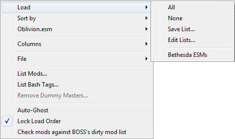
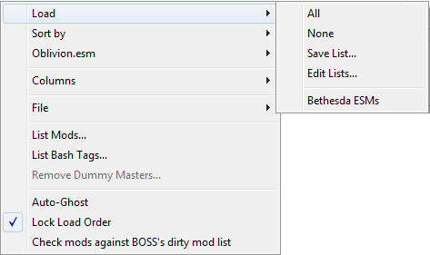

 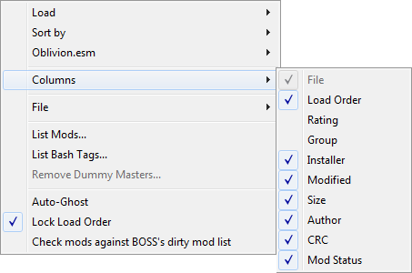
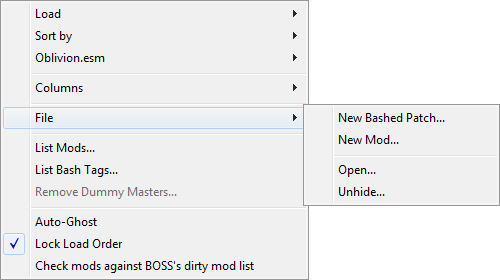
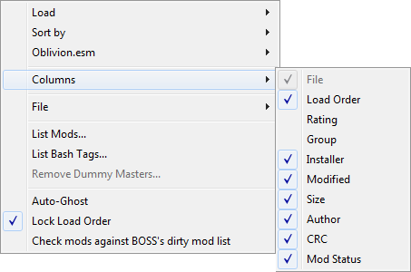
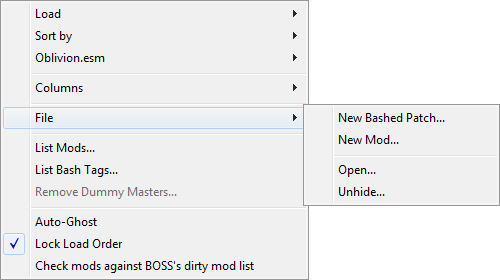


| Mods Column Header Context Menu | ||
|---|---|---|
| Command | Description | |
| Sort By.. | Masters First | If this is checked, then masters will be sorted before non-masters. Always on if the sort column is Load Order. |
| Active First | If this is checked, then active plugins will be sorted to the top, followed by merged plugins, imported plugins and finally inactive plugins. | |
| File | Sort plugins by their filename. | |
| Load Order | Sort plugins by their current load order. | |
| Index | Sort plugins by the index they will be assigned by the game at runtime. | |
| Rating | Sort plugins by the ratings you have assigned them. | |
| Group | Sort plugins by the groups you have assigned them. | |
| Source | Sort plugins by the package name that the plugin originates from, if any. | |
| Modified | Sort plugins by the last time they were modified. In games prior to Skyrim, this is equivalent to sorting by Load Order. | |
| Size | Sort plugins by their file size. | |
| Author | Sort plugins by their author. | |
| CRC | Sort plugins by their CRC checksums. | |
| Plugin Status | Sort plugins by their plugin status. | |
| Columns.. | Manual | Don't make any automatic column width changes. |
| Fit Contents | Automatically adjust column width to fit the contents. You can press Ctrl+Numpad Plus (+) to the same effect. | |
| Fit Header | Similar to Fit Contents, but ensure that each column is wide enough to make the full column header text readable too. | |
| File | Display or hide a column showing each plugin's filename. | |
| Load Order | Display or hide a column showing each plugin's load order. Every plugin gets assigned one, even inactive ones. | |
| Index | Display or hide a column showing each plugin's index that it
will be assigned by the game at runtime. Inactive plugins will
not receive any index and in games with ESL support,
ESL-flagged plugins will all receive an index like
FE xyz. This column is useful e.g. if you have an
index from using the console to inspect an object while playing
the game, and want to identify what plugin the object comes
from. For games with ESL support, this column will be enabled
by default, for games without ESL support it will be disabled
by default. |
|
| Rating | Display or hide a column showing the rating you have assigned to each plugin. See Rating.. for more information. | |
| Group | Display or hide a column showing the group you have assigned to each plugin. See Groups.. for more information. | |
| Source | Display or hide a column showing the filename of the package that each plugin originates from, if any. | |
| Modified | Display or hide a column showing the last date at which each plugin was modified. | |
| Size | Display or hide a column showing each plugin's file size. | |
| Author | Display or hide a column showing each plugin's author. See the Author entry in the Plugin Details Panel section for more information. | |
| CRC | Display or hide a column showing each plugin's CRC as a hexadecimal number. | |
| Plugin Status | Display or hide a column showing each plugin's status. This is
either Activeif the plugin is active, Mergedif it is inactive but merged into a Bashed Patch, Importedif it is inactive, but some of its data has been imported into a Bashed Patch or Inactiveif it is inactive and is not in one of the former two states. |
|
| Files.. | Open Folder... | Open the Data folder in your system's default file explorer. You can press Ctrl+O to the same effect. |
| Unhide... | Open a dialog window allowing you to select hidden plugins which will then be unhidden, i.e. moved back to the Data folder. | |
| New Plugin... | Display a dialog that allows you to create an empty plugin with various options. You can press Ctrl+N to the same effect. | |
| New Bashed Patch... | Create a new blank Bashed Patch plugin. Useful if you accidentally delete your current one or wish to have more than one. You can press Ctrl+Shift+N to the same effect. | |
| Active Plugins.. | Activate All | Activate all the plugins in the plugin list. This will first activate as many non-mergeable plugins, according to load order, as possible. If that would result in >255 active plugins (>254 non-ESLs for games with ESL support) or >4096 active ESLs, an error is shown. For games without ESL support, if there is still space for active plugins afterwards, it will next activate as many mergeable plugins, according to load order, as possible. If that would result in >255 active plugins, an info popup is shown. |
| Activate Non-Mergeable | Not available for games with ESL support. Same as Activate All, but doesn't activate any mergeable plugins. | |
| Activate Only Selected | Activate only the currently selected plugins (and their masters). | |
| Deactivate All | Deactivate all the plugins in the plugin list. Some plugins will not be deactivated (for instance Fallout 4 DLCs) as the game force-loads them when present. | |
| Save Active Plugins List... | Save the currently active plugins to a new active plugins list. | |
| Edit Active Plugins Lists... | Allows you to delete and rename saved active plugins lists. | |
| <Active plugins list> | One or more items of this form will be listed below the last
separator in this submenu. Clicking a list name will apply the
list, trying to activate exactly the plugins that are listed in
it. The Vanillalist will always be present. It will activate all .esm plugins that come with the game
(including DLCs). |
|
| Load Order.. | Undo | Revert a change made to the plugin load order. Can also be used to accept a change made by an external program if you have Lock Load Order on. You can press Ctrl+Z to the same effect. |
| Redo | The inverse of Undo. Re-apply a change to the plugin load order that was reverted by Undo. You can press Ctrl+Y or Ctrl+Shift+Z to the same effect. | |
| Lock Active Plugins | If checked, enhance Lock Load Order to make it reverse changes to the enabled/disabled status of plugins in your load order as well. | |
| Open <file> | One or more options of this form may be here, depending on the managed game. They will open the files used by the game for controlling plugin load order in your system's default text editor. | |
| Auto-Ghost | The game engine has a bug where it reads all the plugins in the
Data folder, even when the plugins are inactive, and this will
affect load times and potentially even runtime performance.
Auto-Ghosting adds a .ghostextension to all inactive plugins automatically to prevent the game engine reading them, thereby avoiding the performance drop. When a ghosted plugin is activated, the .ghostextension is removed, allowing it to function as normal. Note that some utilities may not recognize ghosted plugins (e.g. the Creation Kit will not see them), so there are options available for individual plugins to control which get ghosted. See Disallow Ghosting and Ghost/Unghost for more information. |
|
| Lock Load Order | If checked, prevent other programs from altering the plugin
load order. To be exact, this will cause Wrye Bash to detect
changes to the load order (modification times for earlier
games, text files for later ones) whenever Wrye Bash is started
and whenever it regains focus (e.g. via you alt-tabbing into
its window) and reverse those changes. You can use Undo (or equivalently press Ctrl+Z) to accept an external change that has been undone this way. |
|
| Plugins.. | ESL-Flag Bashed Patches | Games with ESL support only. If checked, all built Bashed Patches will automatically be ESL-flagged, saving a load order slot. |
| Check Against LOOT's Dirty Plugin List | LOOT's masterlist contains information on dirty plugins
that can be used by Wrye Bash to highlight these plugins on
the Mods tab. Checking this setting tells Wrye Bash to use
this information. Note that the detection will try to use
masterlists from the user's system-wide LOOT installation,
if those exist. If they don't, Wrye Bash will fall back to the
masterlists it comes bundled with, which may be out of
date. You may also want to turn Ignore Dirty Vanilla Files on. |
|
| Ignore Dirty Vanilla Files | Cleaning the game's master files (DLCs, Creation Club content, etc.) is controversial. Turning this setting on will cause Wrye Bash to not highlight dirty vanilla plugins on the Mods tab or in the Plugin Checker. | |
| Recalculate CRCs | Clean stale CRCs from Wrye Bash's cache. Workaround for buggy CRC updates in previous versions of Wrye Bash. You will almost certainly never need to run this. | |
| List Plugins... | Display a report on your load order, including version
information, activation status and major load order errors, and
copy it to your clipboard. This can be useful for debugging a
broken load order, sharing your load order with other people,
etc. If the Shift key is held when this command is run, the CRCs of plugins will also be displayed in the output. If the Ctrl key is held, then the versions of plugins will not be shown in the output. |
|
| Oblivion.esm.. | Oblivion only. This submenu controls Oblivion.esm Swapping. See that section for more information. | |
| Bash Tags.. | List Bash Tags... | Display a list of all the Bash Tags applied to the plugins in your load order, and where/how the Bash Tags were specified. It can be useful for figuring out where certain tags are coming from. See also the other version of this command that can be run on all selected plugins via the right-click context menu. |
| Export Bash Tags... | Export all currently applied bash tags to a CSV file. Plugins without tags will not be exported. | |
| Import Bash Tags... | Import applied bash tags from a CSV file. Plugins not listed in the CSV file will be left untouched. | |
| Clear Manual Bash Tags | Remove all manually applied bash tags. Tags from plugin descriptions, LOOT masterlists and userlists and BashTags files will be left untouched. This cannot be undone! Be sure that this is what you want to do before running this command. | |
| Plugin Checker... | Launch the Plugin Checker. Equivalent to clicking on its icon in the status bar. | |
| Remove Dummy Masters... | Remove all dummy master files created using Create Dummy Masters.... Cannot be run if no dummy masters exists right now. | |
| Save Data | Make Wrye Bash save its internal state to disk right now. Automatically done when you close Wrye Bash. You can press Ctrl+S to the same effect. | |
| Global Settings... | Open the Settings Menu. | |
 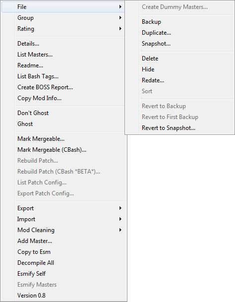
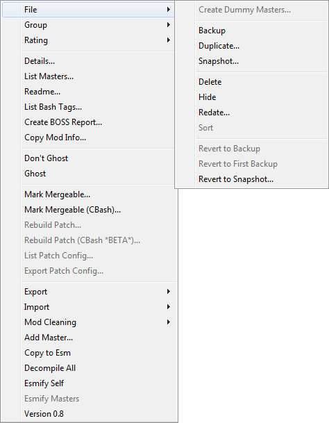

 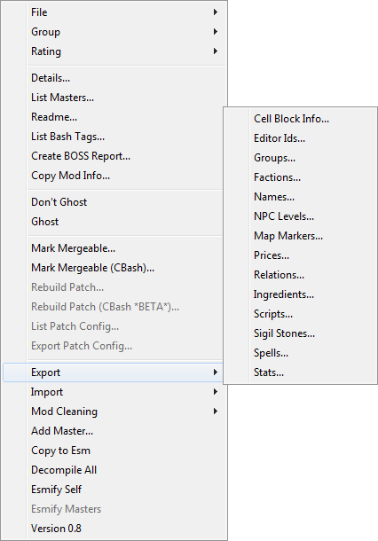
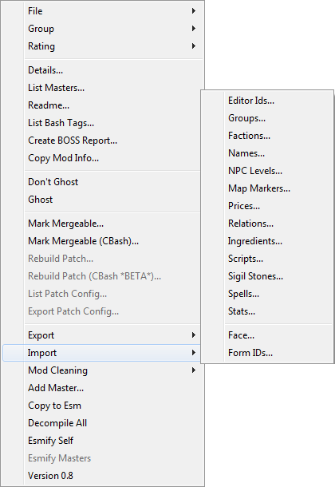
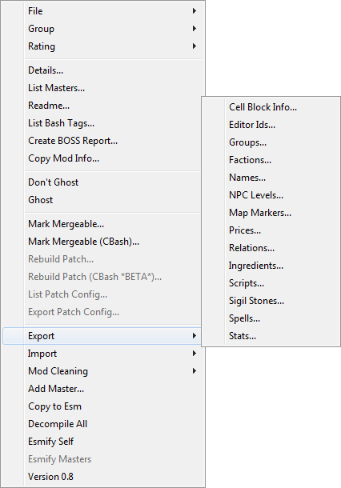
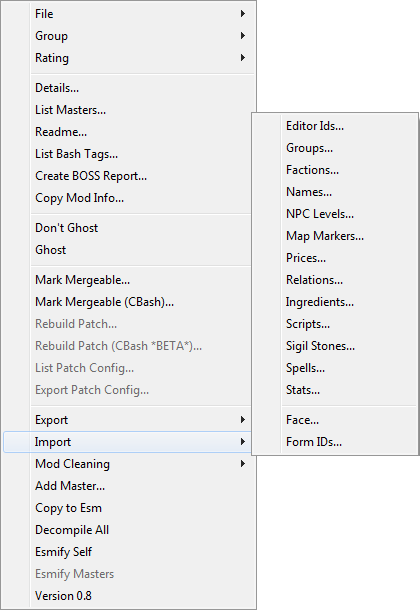


| Plugin Context Menu | ||||
|---|---|---|---|---|
| Command | Description | |||
| File.. | Duplicate... | Create a copy of the selected plugin in the Data folder. | ||
| Hide... | Move the selected plugin to the
[Game] Mods/Bash Mod Data/Hidden subdirectory. If
the plugin's author is
defined and there is a Bash Mod Data/Hidden
subdirectory of the same name, the plugin will be placed there.
If not and the plugin
has a group assigned and there is a
Bash Mod Data/Hidden subdirectory of the same
name, the plugin will be placed there instead. Otherwise it
will be placed directly inside
Bash Mod Data/Hidden. |
|||
| Redate... | Change the modification time of the selected plugin. If more than one plugin is selected, then all the plugins will have their modification times altered, with the first in the list being set to the specified time and the rest at one minute intervals from that time. | |||
| Delete | Delete the selected plugin(s) and any backups of them, but not snapshots. Deleted plugins are sent to the Recycling Bin. You can press Delete to the same effect. | |||
| Backup | Create a backup of the selected plugin in
[Game] Mods\Bash Mod Data\Backups. The first time
such a backup is made for this plugin, the backed-up plugin has
f appended to its file extension, giving e.g.
.espf. This first backup can be used via
Revert To First Backup....
The last backup made can be used via
Revert To Backup...
instead. |
|||
| Revert To Backup... | Revert the selected plugin to the last backup made of it. | |||
| Revert To First Backup... | Revert the selected plugin to the first backup made of it. | |||
| Snapshot... | Create a copy of the selected plugin in
[Game] Mods\Bash Mod Data\Snapshots. Snapshot
filenames are appended with -n where n is a number
between 01 and 99. E.g. the first snapshot of
Plugin.esp is Plugin-01.esp. The
number is incremented each time the plugin has a snapshot
taken. Additionally, if there is a version line in the plugin's
description field, then the snapshot number will be appended to
the version number in the same manner. |
|||
| Revert To Snapshot... | Revert the selected plugin to a selected snapshot. | |||
| Move To... | Move the selected plugin(s) to the specified position. Note that the way this works with inactive plugins may seem a bit counter-intuitive. Since inactive plugins do not have indices, it will be moved to occupy the selected position, but since it's inactive, the next active plugin after it is the one that actually receives the position. In practical terms, this means you will often end up moving an inactive plugin to one spot before the one you wanted and adjusting its position via drag and drop or via Ctrl+Up Arrow (â)/Ctrl+Down Arrow (â) will be necessary. | |||
| Readme... | Open the selected plugin's in the Doc Browser. You can double-click on the plugin to the same effect. | |||
| Jump to Source | Jump to the package that installed the selected plugin, if the Installers tab is enabled and not hidden and the plugin in question has an associated package. You can Alt-Click on the plugin to the same effect. | |||
| Info.. | List Bash Tags... | Display a list of all the Bash Tags applied to the selected plugin, and where/how the Bash Tags was specified. This can be useful for debugging a misbehaving Bashed Patch or simply to find out where certain tags are coming from. See also the other version of this command that runs on all plugins in the plugin list, accessed via the column header menu. | ||
| List Dependent... | Display a list of plugins that have the selected plugin as a
master and copy it to your clipboard. Active plugins are
prefixed with their load order while merged, imported and
inactive mods are prefixed with ++,
** and __ respectively. |
|||
| List Masters... | Output a list of the selected plugin's masters and copy it to your clipboard. | |||
| List Patch Config... | Display a summary of how the selected Bashed Patch is configured and copy it to your clipboard. | |||
| Create LOOT Entry... | Create LOOT masterlist entries based on the tags you have applied to the selected plugins. Also tries to figure out the URL that the plugin came from based on the BAIN package it was installed from, if any. | |||
| Copy Plugin Info... | Display a report on the selected plugins with the info from the currently displayed columns and copy it to your clipboard. | |||
| Details... | Display a list of the records in the selected plugin, similar to the Details view in the Construction Set/Creation Kit. | |||
| Mark Mergeable... | Not available for games with ESL support. Scan the selected plugins to determine if they are mergeable or not. Wrye Bash does this automatically, but this command lists the reasons why a plugin is unmergeable. This is useful if you think some plugins should be mergeable, but the Bashed Patch is refusing to merge them. | |||
| Check ESL Qualifications | Games with ESL support only. Check if the selected plugins can be ESL-flagged using Add ESL Flag. Wrye Bash does this automatically, but this command reports why plugins can't be ESL-flagged. This is useful if you think some plugins are ESL-capable and Wrye Bash is refusing to mark them as such. | |||
| Rebuild Patch... | Rebuild the selected Bashed Patch. See the Setting Up A Bashed Patch and Advanced Bashed Patch sections for more information. | |||
| Add/Remove ESM Flag | Every plugin has a flag in its header, identifying whether it
is a master or not. This command toggles this ESM flag so that
regular plugins become masters and vice versa. Note that this
command is only enabled for .esp and
.esu plugins. If you want to change this flag for
other types of plugins, use xEdit.Note that this may change the load order of the newly ESM-flagged plugin, since masters always load before regular plugins. See also Add/Remove ESM Flag to/From Masters. |
|||
| Add/Remove ESL Flag | Games with ESL support only. Similar to Add/Remove ESM Flag, but targets the ESL flag instead of the ESM flag. This command is only enabled if the plugin is ESL-capable. See Check ESL Qualifications for more information. | |||
| Add/Remove ESM Flag to/From Masters | Similar to Add/Remove ESM Flag,
but toggle the ESM flag for a plugin's masters rather than the
plugin itself. This command is useful if you want to load a
plugin with .esp masters in the Construction
Set/Creation Kit, since that does not support loading
non-.esm files as masters. Be sure to remove the
ESM flags afterwards again.Note that this may change the load order of the newly ESM-flagged plugins, since masters always load before regular plugins. You can use Undo to revert back to the old load order once done. |
|||
| Create Dummy Masters... | Create an empty plugin for each missing master of the selected plugin. This is useful for allowing xEdit to open a plugin with missing masters (e.g. a Filter plugin). These dummy plugins can later be removed using the Remove Dummy Masters command. | |||
| Plugin.. | Groups.. | Export Groups... | Export the selected plugins' groups to a CSV file as plugin name/groups pairs. To be used with Import Grups..., e.g. to back the groups up, share them with other people, etc. | |
| Import Groups... | This will set the groups for selected plugins as specified in a CSV file (created by the Export Groups... command). If any selected plugins are not assigned a group in the file, they will remain untouched. | |||
| Edit Groups... | Add | Create a new group. | ||
| Rename | Rename the selected group. Plugins that belong to it will have their assigned group updated to match. | |||
| Remove | Delete the selected group. Deleting a group removes it from all plugins that had it assigned. | |||
| Refresh | Look at assigned groups and add new ones to the existing ones. Use this after importing groups using Import Groups... to update available groups. | |||
| Sync | Synchronize the list of available groups to the assigned ones. In other words, this will delete groups that have not been assigned to any plugins. | |||
| Default | Reset the list of available groups to the default ones. This won't delete non-default assigned groups, it's meant for bringing back default groups that you accidentally deleted. Use Refresh to pick up your groups and add them to the defaults. | |||
| <group> | <group> is the name of a group. They occur
after the separator. Clicking one assigns the selected plugins
to that group. Groups that are assigned to the selected plugins
appear checked. They provide no automatic functionality,
other than to place hidden plugins in group folders,
provided those folders already exist. Use them to group
plugins together so you can disable or enable them at once,
etc. The special Nonegroup means that the plugin is not assigned to any group right now. |
|||
| Rating.. | A purely cosmetic feature, this allows you to assign different rating values to plugins. Behaves very similarly to Groups... | |||
| Disallow Ghosting | Don't ghost the selected plugins when they are inactive, even if Auto-Ghost is enabled. Will unghost the selected plugins when enabled. | |||
| Allow Ghosting | Displayed if multiple plugins are selected. Disable Disallow Ghosting for the selected plugins. | |||
| Invert Ghosting | Displayed if multiple plugins are selected. Toggle the status of Disallow Ghosting for the selected plugins. | |||
| Ghost/Unghost | Manually ghost or unghost the selected plugins. Note that this is temporary and automatic ghosting will take over again the next time Wrye Bash is started. If you want your changes to persist, activate Disallow Ghosting for the selected plugins. | |||
| Order by Name | Set the load order of the selected plugins starting at the lowest ordered plugin, sorting them alphabetically. | |||
| Copy To.. | Submenu offering a list of commands that each create a copy of all selected plugins, with the extensions changed to match the chosen command's name. | |||
| Cleaning.. | Don't Check Against LOOT's Masterlist | If checked, do not compare the selected plugins against LOOT's masterlist to determine whether or not they are dirty and need to be cleaned via xEdit. | ||
| Scan for Deleted Records | Scan the selected plugins for deleted records (i.e. deleted
references, deleted base records and, for games that have them,
deleted navmeshes), outputting counts and FormIDs of the found
records. This will skip the game master (since it cannot
contain deleted records) and plugins with the .esu
extension, since those use deleted records on purpose to mark a
record existing in one version of the plugin but not in the
other one. |
|||
| Remove World Orphans | Some plugins have a mild form of corruption where exterior cells of new worldspaces in a .esp master of the plugin are included in the plugin even if they are not edited, but the parent worldspace is not included, creating "orphaned" cells. This command will remove these "orphans". | |||
| Nvidia Fog Fix | Oblivion & Nehrim: At Fate's Edge only.
Systems with very old Nvidia graphics cards can suffer a
black screen bug when interior cell fog distances are set to 0.
This command scans the selected plugins and sets any
zero-valued fog distances to 0.001. Note: This command is probably not needed anymore. 'Very old' does mean very old, i.e. referring to graphics cards released around 2008. |
|||
| Advanced.. | Export.. | Editor IDs... | Export the Editor IDs of the records in the selected plugin to a CSV file. | |
| Factions... | Export the factions defined for actors in the selected plugin to a CSV file, which can be imported to a plugin or used in the Bashed Patch's Import Actors: Factions patcher. | |||
| Relations... | Export the faction relationships in the selected plugin to a CSV file. This does not export race relationships. The CSV file can also be used in the Bashed Patch's Import Relations patcher. | |||
| Ingredients... | Export alchemy ingredient record data from the selected plugin to a CSV file. | |||
| Names... | Export the names of the objects in the selected plugin to a CSV file. All the records displayed in the Construction Set's Objects Window are supported - cells and dialogue are not. As well as being useful for the usual large-scale changes, this command is useful for translators. The CSV file can also be used in the Bashed Patch's Import Names option. | |||
| NPC Levels... | Export NPC level info from the selected plugin to a CSV file. Only NPCs which are dynamically levelled (i.e. offset from the player's level) will be exported. | |||
| Prices... | Export the prices of objects in the selected plugin to a CSV file. | |||
| Scripts... | Export the scripts in the selected plugin to a series of text
files. The scripts may then be edited in the text files and
re-imported. Warning: Do not change the first three lines of each text file exported when editing unless you know what you're doing. |
|||
| Sigil Stones... | Exports the stats of sigil stones from the selected plugin to a CSV file. | |||
| Spells... | Export spell stats in the selected plugin to a CSV file. The
CSV file can also be used in the Bashed Patch's Import Stats
patcher. There are two modes of export, Basic and Detailed. The
spell stats exported in Basic mode are as follows:
|
|||
| Stats... | Export stats for the following record types in the selected
plugin to a CSV file. The CSV file can also be used in the
Bashed Patch's Import Stats patcher. The following types are
supported:
|
|||
| Import.. | Editor IDs... | Import the Editor IDs for records in the selected plugin from a
CSV file. As well as updating the Editor IDs of records
themselves, this also updates any Editor IDs referenced in
normal (non quest stage or dialogue) scripts to reflect the
changes. Note: You may have to recompile any altered scripts in the Construction Set. If you wish to update script references after the Editor IDs were changed, edit the CSV file and add another column after the eid column and give the old Editor IDs in the new column, e.g. "MISC","Oblivion.esm","0x0123456","New EditorID","Old EditorID" |
||
| Factions... | Import factions defined for actors from a CSV file previously exported using Wrye Bash and apply them to the selected plugin. | |||
| Relations... | Import faction relationships from a CSV file into the selected plugin. | |||
| Ingredients... | Import alchemy ingredient record data from a CSV file into the selected plugin. | |||
| Names... | Import names for objects from a CSV file (or other mod) into the selected plugin. Only records that already exist in the plugin will have their names changed, no records will be added. | |||
| NPC Levels... | Import NPC level info from a CSV file into the selected plugin.
This does not affect Creature levels or leveled lists, nor does
it affect the levels of NPCs in existing saves, for which
Update NPC Levels must be
used. As well as the format exported by
Export NPC Levels, an older
format is supported:
|
|||
| Prices... | Import the prices of objects from a CSV file (or other plugin) into the selected plugin. | |||
| Scripts... | Import scripts from a series of text files into the selected
plugin. Note: You must recompile any altered or new scripts in the Construction Set. |
|||
| Sigil Stones... | Import the stats of sigil stones from a CSV file into the selected plugin. | |||
| Spells... | Import spell stats from a CSV file into the selected plugin. Only records that exist in the plugin will have their spell stats changed, no records will be added. The spell stats supported are those exported by Export Spell Stats..., and importing uses the same Basic and Detailed mode distinctions. | |||
| Stats... | Import stats from a CSV file into the selected plugin. Only records that exist in the plugin will have their stats changed, no records will be added. The object stats supported are those exported by Export Stats.... | |||
| Face... | This command is related to Face Importing, see that section for more information. | |||
| Form IDs... | This is useful if you want to replace the records in one master
with equivalent records from another master. This command
replaces the Form IDs in a plugin according to a CSV file that
acts as a Form ID mapper. An example of such a file is
Data\Bash Patches\TI to Cobl_Formids.csv. The
following instructions detail how to create such a Form ID
mapper:
Clean Masterscommand or TES4Gecko's Edit Master Listcommand. The former only removes totally unused masters while the latter can remove used masters with the appropriate cleanup, and is not an automated procedure. Note: You can also use xEdit to change the Form IDs using its Batch Change Referencing Recordscommand together with the CSV file created. xEdit will also change the definition of a Form ID, rather than just any references to it, unlike Wrye Bash. |
|||
| Decompile All | Oblivion only. Undo the effect of a Compile Allperformed in the Construction Set. It will not do anything to the game's master file. |
|||
| Version 0.8 | Oblivion only. Reset the file version number of the
selected plugin so that it can be edited in an older version of
the Construction Set, which is required when making certain
changes due to bugs in the latest Construction Set. Warning: It is possible that this may cause data loss. Do not use unless necessary! |
|||
| Plugin Masters List Column Header Context Menu | ||
|---|---|---|
| Command | Description | |
| Sort By.. | This submenu allows you to choose by which column the masters list is sorted. This is equivalent to clicking on a column header. | |
| Allow Editing | Allow (or disallow) editing of the masters list. Enables (or disables) the items' context menu entries. | |
| Clear Renames | Clears the internal renames dictionary, meaning that maters that were previously renamed will no longer be automatically renamed in future plugins' master lists. | |
| Plugin Masters List Items Context Menu | ||
|---|---|---|
| Command | Description | |
| Change To... | Rename a master by selecting the desired replacement plugin
from the Data folder. It will add the plugin to the internal
renames dictionary of Wrye Bash and bold it on any master list
that it appears in. Hit Save to edit the selected file
permanently. Equivalent to left clicking the selected master
for a second time, just allows you to select the plugin from
the Data directory instead of entering the name manually.
|
|
| Jump to Master | Jump to the specified master on the Mods tab. You can double-click on the master to the same effect. | |
Advanced Bashed Patch Back to top
You can have multiple Bashed Patches, though one is generally enough per
save profile or character. The only
requirement for Wrye Bash recognising a plugin as a Bashed Patch is that
its Author field is set to
BASHED PATCH, so you can name a Bashed Patch whatever you
want. See the Author
section linked above for more information.
Viewing & Editing The Bashed Patch Back to top
As the Bashed Patch commonly has .esp files as masters, viewing
and editing it can be more complicated than for the average plugin. If you
wish to view its contents, it is easiest to use
xEdit, which
can also be used to edit most types of data in plugins. To edit it using
the Construction Set or Creation Kit (required when editing scripts),
you'll need to first use the
Add ESM Flag to Masters command on it. Be
sure to use Remove ESM Flag From Masters
before attempting to play the game afterwards.
Bash Tags Back to top
Wrye Bash uses a tagging system to determine what plugins can and should
have certain data imported into the Bashed Patch. These
Bash Tags are specified by mod authors in the header
descriptions of their plugins, are applied using data from LOOT's
masterlist and userlist files, and are read from text files in the
[GAME]\Data\BashTags folder.
In increasing priority, the Bash Tags sources are:
- Description in the header of the plugin (can be edited in WB)
- taglist.yaml (LOOT) - only if no LOOT masterlist was found on the user's computer
- masterlist.yaml (LOOT)
- userlist.yaml (LOOT)
[GAME]\Data\BashTags\[PLUGIN NAME].txt- Tags that were manually set in Wrye Bash
Wrye Bash includes a LOOT masterlist parser. It will try and parse the
masterlist and userlist files, if it finds them in the
%LOCALAPPDATA%\LOOT\[GAME] directory. If that fails (e.g. if the
files are not there) it will fall back to a
Mopy\taglists\[GAME]\taglist.yaml file bundled with Wrye Bash.
For more information on userlists, masterlists, their syntax, etc., please
see LOOT's own documentation.
BashTags Files Back to top
For each plugin, Wrye Bash will read the file
[GAME]\Data\BashTags\[PLUGIN NAME].txt, if it exists. Bash
Tags specified in this file will override ones in the description and the
LOOT masterlist. These files are intended for people besides the mod author
to share plugin suggestions. For example, a guide creator could create
files with fitting Bash Tags and package the BashTags folder
as an archive, distribute the archive as a download with the guide, and
users can then simply install the archive with BAIN to get the right Bash
Tags. Occasionally, the number of Bash Tags in a plugin's description may
also become so large that the size limit for the description is in danger
of being reached. That is another legitimate use case for BashTags files
(USSEP
was in this situation and now ships a BashTags file for this reason).
Wrye Bash has the ability to create these files through its GUI too. Right click on a plugin's Bash Tags field in the Mods Tab's Plugin Details panel on the sidebar and click Copy to BashTags to create or rewrite the matching file, placing all currently active Bash Tags in there.
The format for these files is simple. Each line can specify one or more tags to be added or removed - in which case a minus should be prepended to the tag - separated by commas.
Note: BashTags files must be in UTF-8 encoding (ASCII is fine, since it is backwards-compatible).
An example to demonstrate their syntax follows:
# Everything after a '#' is a comment
# Every line that is not a comment
# or empty will add or remove tags
# from the plugin
Delev, Relev # This line will add two
# new tags to the plugin...
-C.Water # ...while this line removes
# a tag from the plugin
# Addition and removal can also be
# done in one line:
C.Location, -C.LockList
# The result of this file would be:
# Added: C.Location, Delev, Relev
# Removed: C.LockList, C.Water
Manual Tagging Back to top
Bash Tags may also be set manually, by clicking on
 above a plugin's
Bash Tags field in the Mods Tab's
sidebar and checking or unchecking tags in the displayed popup. You can
also remove tags by selecting them and clicking on
above a plugin's
Bash Tags field in the Mods Tab's
sidebar and checking or unchecking tags in the displayed popup. You can
also remove tags by selecting them and clicking on
 .
.
If you wish to revert to automatic tagging, right click the Bash Tags field and choose Automatic. If you are a mod author, you may wish to use Copy to Description for your mod's plugins before releasing it to ensure that users have the tags applied automatically.
List of Bash Tags Back to top
The following tables list all Bash Tags that Wrye Bash supports.
Note: A Bash Tag should only be applied when it is important that the plugin's change to whatever the tag relates to is preserved. If a change your plugin makes is not important to the functioning of your plugin, do not add a Bash Tag for it. Doing otherwise negates the purpose of the Bash Tag system.
Note: Not all record types or bash tags are available/supported for all games. Carefully inspect the tables below to see if the tag you want to use is avaiable for your game and what it actually does for that game.
| Special Function Bash Tags | ||
|---|---|---|
| Tag | Used When The Mod | Specific Record Types/Changes Supported |
| Deactivate | Should be deactivated. | N/A |
| Filter | Does not require all its masters to be installed to function. See the Filtering section for more information. | N/A |
| IIM | Is to be used in Item Interchange Mode. See the Item Interchange Mode section for more information. | N/A |
| MustBeActiveIfImported | Must be active to function correctly even if it is imported into the Bashed Patch. Currently this tags only function is that Bash won't ask to deactivate the plugin. | N/A |
| NoMerge | Should not be merged even though it is technically mergeable. | N/A |
| Removed & Deprecated Bash Tags | |
|---|---|
| Tag | Replacement/Notes |
| Actors.Perks.Add | Older name for NPC.Perks.Add. |
| Actors.Perks.Change | Older name for NPC.Perks.Change. |
| Actors.Perks.Remove | Older name for NPC.Perks.Remove. |
| Body-F | Older name for R.Body-F. |
| Body-M | Older name for R.Body-M. |
| Body-Size-F | Older name for R.Body-Size-F. |
| Body-Size-M | Older name for R.Body-Size-M. |
| C.GridFlags | Older name for C.ForceHideLand. |
| Derel | Older name for Relations.Remove. |
| Eyes | Older name for R.Eyes. |
| Eyes-D | Older name for R.Eyes. |
| Eyes-E | Older name for R.Eyes. |
| Eyes-R | Older name for R.Eyes. |
| Factions | Older name for Actors.Factions. |
| Hair | Older name for R.Hair. |
| Invent | Split into Invent.Add, Invent.Change and Invent.Remove. The behavior of the old Invent tag is equivalent to Invent.Add combined with Invent.Remove. |
| InventOnly | Use the Invent tags mentioned above in conjunction with IIM instead. |
| Merge | Obsoleted due to Merge Patches rework. |
| Npc.EyesOnly | Older name for NPC.Eyes. |
| Npc.HairOnly | Older name for NPC.Hair. |
| NpcFaces | Split into NPC.Eyes, NPC.Hair and NPC.FaceGen. Previous
behavior is equivalent to all three tags combined.
Warning: Previous versions allowed applying both NpcFaces and one of the two 'Only' tags above. This was undefined behavior, but thankfully no mods seem to have made this mistake. |
| R.Relations | Split into R.Relations.Add, R.Relations.Change and R.Relations.Remove. The behavior of the old R.Relations tag is equivalent to all three tags combined. |
| Relations | Split into Relations.Add and Relations.Change. The behavior of the old Relations tag is equivalent to Relations.Add combined with Relations.Change. |
| ScriptContents | Dangerous tag that was never fully implemented. |
| Voice-F | Older name for R.Voice-F. |
| Voice-M | Older name for R.Voice-M. |
| Bash Tags Shared Between Games | ||
|---|---|---|
| Tag | Used When The Mod | Specific Record Types/Changes Supported |
| Actors.ACBS | Modifies the (ACBS) Configuration subrecord of actors. | See the game-specific sections below for record types:
|
| Actors.AIData | Modifies the (AIDT) AI Data subrecord of actors. | See the game-specific sections below for record types:
|
| Actors.AIPackages | Modifies AI package lists of actors. | Addition or removal of an (PKID) AI Package in the AI Packages
subrecord in the following record types:
|
| Actors.AIPackagesForceAdd | Adds to AI package lists of actors. This tag forces the addition of packages even if they are removed by later-loading plugins tagged with Actors.AIPackages. | Addition of an (PKID) AI Package in the AI Packages subrecord
in the following record types:
|
| Actors.Anims | Modifies actor special animations lists. | Modification of the (KFFZ) Animations subrecord in the
following record types:
|
| Actors.CombatStyle | Modifies the assigned combat styles of actors. | Modification of the (ZNAM) Combat Style subrecord in the
following record types:
|
| Actors.DeathItem | Modifies actor death items. | Modification of the (INAM) Death Item subrecord in the
following record types:
|
| Actors.Factions | Changes creature and NPC factions. | Addition or removal of a faction, or change of faction rank in
(NPC_) Non-Player Character or (CREA) Creature
(Oblivion, Nehrim: At Fate's Edge, Fallout 3
& Fallout: New Vegas only) records.
|
| Actors.RecordFlags | Modifies actor record flags. | Modification of record flags in the following record types:
|
| Actors.Skeleton | Modifies actor skeletons. | The following (NPC_) Non-Player Character or (CREA) Creature subrecords:
|
| Actors.Spells | Modifies the spell lists of actors. These are also sometimes called 'actor effects', depending on the game. | Addition, modification or removal of spells to the (SPLO)
Spells subrecord in the following record types:
|
| Actors.SpellsForceAdd | Modifies the spell lists of actors. These are also sometimes called 'actor effects', depending on the game. This tag forces the addition of spells even if they are removed by other plugins tagged with Actors.Spells. | Addition of spells to the (SPLO) Spells subrecord in the
following record types:
|
| Actors.Stats | Modifies actor stats (e.g. health, skills, stamina, etc.). | See the game-specific sections below for record types:
|
| Actors.Voice | Changes the voices of actors. | The (VTCK) Voice subrecord in the following record types:
|
| C.Acoustic | Modifies cell Acoustic Space. | The Acoustic Space (XCAS) subrecord in Cell (CELL) records.
Not available for Oblivion, Nehrim: At Fate's Edge & Fallout 4. |
| C.Climate | Modifies cell climates. | The following subrecords:
Oblivion, Nehrim: At Fate's Edge, Fallout 3 & Fallout: New Vegas only.
|
| C.Encounter | Modifies cell Encounter Zone. | The Encounter Zone (XEZN) subrecord in Cell (CELL) records.
Not available for Oblivion, Nehrim: At Fate's Edge & Fallout 4. |
| C.ForceHideLand | Modifies cell Force Hide Land flags. | The Force Hide Land flags field in the Grid (XCLC) subrecord in Cell (CELL) records.
Not available for Oblivion, Nehrim: At Fate's Edge & Fallout 4. |
| C.ImageSpace | Modifies cell ImageSpace. | The Image Space (XCIM) subrecord in Cell (CELL) records.
Not available for Oblivion, Nehrim: At Fate's Edge & Fallout 4. |
| C.Light | Modifies cell lighting or fog. | The following subrecords:
Fallout 3 & Fallout: New Vegas only: Skyrim, Enderal: Forgotten Stories and Skyrim: Special Edition only: |
| C.LockList | Modifies cell lock list. | The lock list (XILL) subrecord in (CELL) Cell records.
Available for Skyrim, Enderal: Forgotten Stories and Skyrim: Special Edition only. |
| C.Location | Modifies cell Location. | The Location (XLCN) subrecord in (CELL) Cell records.
Available for Skyrim, Enderal: Forgotten Stories and Skyrim: Special Edition only. |
| C.MiscFlags | Modifies miscellaneous (CELL) Cell flags. | All (DATA) Flags not covered by other bash tags:
|
| C.Music | Modifies cell music type. | The following subrecords:
|
| C.Name | Modifies cell names. |
The (FULL) Name subrecord in (CELL) Cell records.
Not available for Fallout 4. |
| C.Owner | Modifies Cell Ownership. | The following (CELL) Cell subrecords:
|
| C.RecordFlags | Modifies record flags in (CELL) Cell records. | Any Cell (CELL) record flags.
Not available for Fallout 4. |
| C.Regions | Modifies the Cells Region subrecord. | Any (XCLR) subrecord of the Cell (CELL) record.
Not available for Fallout 4. |
| C.SkyLighting | Modifies Use Sky Lighting (CELL) Cell flag. | (DATA - Flags) Use Sky Lighting
Available for Skyrim, Enderal: Forgotten Stories and Skyrim: Special Edition only. |
| C.Water | Modifies cell water type or level. | The following (CELL) Cell subrecords:
|
| Creatures.Blood | Modifies the creature blood subrecords. | The following (CREA) Creature subrecord(s):
|
| Creatures.Type | Modifies the type of creatures. | The following (CREA) Creature subrecords:
|
| Deflst | Removes entries from the FormID List (FLST) record. | Removal of FormID from (FLST) FormID List record:
|
| Delev | Deletes entries from Leveled Lists. | Removal of a (LVLO) Level List Entry from the following record types:
|
| Destructible | Modifies destructible records. | See the game-specific sections below for record types:
|
| EffectStats | Modifies (MGEF) Magic Effect / Base Effect stats. | The following fields of the (DATA) Data subrecord in (MGEF)
Magic Effect / Base Effect records:
For games since Skyrim: |
| Enchantments | Modifies enchantments applied to objects. These are also sometimes called 'object effects', depending on the game. | The following records and subrecords:
|
| EnchantmentStats | Modifies (ENCH) Enchantment / Object Effect stats. | The following fields of the (ENIT) Effect Data subrecord in
(ENCH) Enchantment / Object Effect records:
Skyrim and newer games: |
| Graphics | Is a graphics replacer. | See the game-specific sections below for record types:
|
| Invent.Add | Adds items to inventories. | Addition of items in the following records:
Invent.Add and
Invent.Remove.
|
| Invent.Change | Changes other properties (like count and owner) of items in inventories. | Change of item properties in the following records:
|
| Invent.Remove | Removes items from inventories. | Removal of items in the following records:
Invent.Add and
Invent.Remove.
|
| Keywords | Modifies the lists of keywords attached to things. |
See the game-specific sections below for record types:
|
| Names | Changes the names of things. | See the game-specific sections below for record types:
|
| NPC.AIPackageOverrides | Changes the package override lists of NPCs. | The following (NPC_) Non-Player Character subrecords:
|
| NPC.AttackRace | Changes the attack race of NPCs. | The (ATKR) Attack Race subrecord of (NPC_) Non-Player Character
records.
Available for Skyrim and newer games. |
| NPC.Class | Changes the classes of NPCs. | The (CNAM) Class subrecord of (NPC_) Non-Player Character records. |
| NPC.CrimeFaction | Changes the crime factions of NPCs. | The (CRIF) Crime Faction subrecord of (NPC_) Non-Player
Character records.
Available for Skyrim and newer games. |
| NPC.DefaultOutfit | Changes the default outfits of NPCs. | The (DOFT) Default Outfit subrecord of (NPC_) Non-Player
Character records.
Available for Skyrim and newer games. |
| NPC.Eyes | Modifies Non-Player Character eyes. | The (ENAM) Eyes subrecord of (NPC_) Non-Player Character
records.
Oblivion, Nehrim: At Fate's Edge, Fallout 3 & Fallout: New Vegas only. |
| NPC.FaceGen | Modifies Non-Player Character faces. | The following (NPC_) Non-Player Character subrecords:
|
| NPC.Hair | Modifies Non-Player Character hair. | The following (NPC_) Non-Player Character subrecords:
|
| NPC.Perks.Add | Adds new perks to NPCs. | Addition of new (PRKR) Perk objects to the perk list of (NPC_)
Non-Player Characters.
Available for Skyrim and newer games. |
| NPC.Perks.Change | Changes the rank of NPC perks. | Change of ranks in (PRKR) Perk objects in the perk list of
(NPC_) Non-Player Characters.
Available for Skyrim and newer games. |
| NPC.Perks.Remove | Removes perks from NPCs. | Removal of (PRKR) Perk objects from the perk list of (NPC_)
Non-Player Characters.
Available for Skyrim and newer games. |
| NPC.Race | Changes the races of NPCs. | The (RNAM) Race subrecord of (NPC_) Non-Player Character records. |
| NpcFacesForceFullImport | Modifies Non-Player Character faces, and you wish to import the unmodified subrecords as well as the modified subrecords. | The following (NPC_) Non-Player Character subrecords:
Oblivion, Nehrim: At Fate's Edge, Fallout 3 & Fallout: New Vegas only. |
| ObjectBounds | Changes the object bounds of things. | See the game-specific sections below for record types:
|
| Outfits.Add | Adds items to outfits. | Additions of items in (OTFT) Outfit records.
Available for Skyrim and newer games. |
| Outfits.Remove | Removes items from outfits. | Removal of items in (OTFT) Outfit records.
Available for Skyrim and newer games. |
| R.AddSpells | Adds spells to racial spell list(s). Either R.ChangeSpells or R.AddSpells should be used for a plugin, not both. | Additions to the spell list of (RACE) Race records.
Oblivion, Nehrim: At Fate's Edge, Skyrim, Enderal: Forgotten Stories & Skyrim: Special Edition only. |
| R.Body-F | Modifies female body mesh/texture definitions in (RACE) Race record. | Changes to the following subrecords:
|
| R.Body-M | Modifies male body mesh/texture definitions in (RACE) Race record. | Changes to the following subrecords:
|
| R.Body-Size-F | Modifies female body weight/height definitions in (RACE) Race record. | Changes to the following subrecords:
|
| R.Body-Size-M | Modifies male body weight/height definitions in (RACE) Race record. | Changes to the following subrecords:
|
| R.ChangeSpells | Modifies racial spell list(s) (beyond adding spells). Either R.ChangeSpells or R.AddSpells should be used for a plugin, not both. | Additions or removals to the (SPLO) spell list of (RACE) Race
records.
Oblivion, Nehrim: At Fate's Edge, Skyrim, Enderal: Forgotten Stories & Skyrim: Special Edition only. |
| R.Description | Modifies race descriptions. | The (DESC) description subrecord of (RACE) Race records.
All games but Fallout 4. |
| R.Ears | Modifies race ears. | The following (RACE) Race subrecords:
|
| R.Eyes | Adds eyes to races. | See the game-specific sections below for record types:
|
| R.Hair | Adds hairs to races. | The (HNAM) Hairs subrecord of (RACE) Race records.
Oblivion, Nehrim: At Fate's Edge, Fallout 3 & Fallout: New Vegas only. |
| R.Head | Modifies race heads. | See the game-specific sections below for record types:
|
| R.Mouth | Modifies race mouths. | See the game-specific sections below for record types:
|
| R.Relations.Add | Adds race-faction relationships. | The (XNAM) faction list of (RACE) Race records.
Oblivion, Nehrim: At Fate's Edge, Fallout 3 & Fallout: New Vegas only. |
| R.Relations.Change | Changes race-faction relationships. | The (XNAM) faction list of (RACE) Race records.
Oblivion, Nehrim: At Fate's Edge, Fallout 3 & Fallout: New Vegas only. |
| R.Relations.Remove | Removes race-faction relationships. | The (XNAM) faction list of (RACE) Race records.
Oblivion, Nehrim: At Fate's Edge, Fallout 3 & Fallout: New Vegas only. |
| R.Skills | Modifies race skill bonuses. | The (DATA) skills and skill boosts of (RACE) Race records.
All games but Fallout 4. |
| R.Teeth | Modifies race upper or lower teeth. | See the game-specific sections below for record types:
|
| R.Voice-F | Modifies female voice definitions. | The (VNAM / VTCK) female voice of (RACE) Race records.
All games but Fallout 4. |
| R.Voice-M | Modifies male voice definitions. | The (VNAM / VTCK) male voice of (RACE) Race records.
All games but Fallout 4. |
| Relations.Add | Adds faction relationships. | Additions of (XNAM) Relation subrecords in (FACT) Faction records. |
| Relations.Change | Changes faction relationships. | Changes to the following fields in (XNAM) Relation subrecords
in (FACT) Faction records:
|
| Relations.Remove | Removes faction relationships. | Removal of (XNAM) Relation subrecords from (FACT) Faction records. |
| Relev | Re-levels leveled list entries. | Changes to the Level or Count of a (LVLO) leveled list entry in:
|
| Scripts | Modifies scripts attached to various things. | See the game-specific sections below for record types:
|
| Sound | Replaces sounds. | See the game-specific sections below for record types:
|
| SpellStats | Modifies spell stats. | The following (SPEL) Spell and (SCRL) Scroll (Skyrim, Enderal: Forgotten Stories and Skyrim: Special Edition only) subrecords:
Oblivion, Nehrim: At Fate's Edge, Fallout 3 & Fallout: New Vegas only: Skyrim, Enderal: Forgotten Stories and Skyrim: Special Edition only: |
| Stats | Modifies the stats (e.g. weight, value, etc.) of items and other objects. | See the game-specific sections below for record types:
|
| Text | Modifies long-form text (e.g. the text in a book, or descriptions of armor, spells, weapons, etc.) of things. | See the game-specific sections below for record types:
|
| Bash Tags Available For Oblivion & Nehrim: At Fate's Edge | ||
|---|---|---|
| Tag | Used When The Mod | Specific Record Types/Changes Supported |
| Actors.ACBS | Modifies the (ACBS) Configuration subrecord of:
|
Changes to the following fields in (ACBS) Configuration:
If one of them is changed, then they will both be carried forward together. |
| Actors.AIData | Modifies the (AIDT) AI Data subrecord of:
|
The following subrecords:
|
| Actors.Stats | Modifies actor stats (e.g. attributes, health, skills, etc.). | The following subrecords:
|
| Graphics | Is a graphics replacer. | The following subrecords:
|
| Names | Changes the names of things. | The (FULL) Name subrecord in the following record types:
|
| Roads | Modifies road records. | The (ROAD) Road child record of (WRLD) Worldspace records. |
| R.Attributes-F | Modifies racial attributes for females. | The following (RACE) Race subrecords:
|
| R.Attributes-M | Modifies racial attributes for males. | The following (RACE) Race subrecords:
|
| R.Eyes | Adds eyes to races. | The following (RACE) Race subrecords:
|
| R.Head | Modifies race heads. | The following (RACE) Race subrecords:
|
| R.Mouth | Modifies race mouths. | The following (RACE) Race subrecords:
|
| R.Teeth | Modifies race upper or lower teeth. | The following (RACE) Race subrecords:
|
| Scripts | Modifies scripts attached to various things. | The Script (SCRI) subrecord in the following record types:
|
| Sound | Replaces sounds. | The following subrecords:
|
| Stats | Modifies item stats. | The following subrecords:
|
| Text | Modifies long-form text (e.g. descriptions of skills or the text in a book) of things. | The DESC subrecord in the following record types:
|
| Bash Tags Available For Fallout 3 & Fallout: New Vegas | ||
|---|---|---|
| Tag | Used When The Mod | Specific Record Types/Changes Supported |
| Actors.ACBS | Modifies the (ACBS) Configuration subrecord of:
|
Changes to the following fields in (ACBS) Configuration:
If one of them is changed, then they will both be carried forward together. |
| Actors.AIData | Modifies the (AIDT) AI Data subrecord of:
|
The following subrecords:
|
| Actors.Stats | Modifies actor stats (e.g. attributes, health, skills, etc.). | The following subrecords:
|
| Destructible | Modifies destructible records. | The Destructible subrecord (DEST, DSTD, DMDL, DMDT & DSTF)
in the following record types:
|
| Graphics | Is a graphics replacer. | The following subrecords:
|
| Names | Changes the names of things. | The (FULL) Name subrecord in the following record types:
|
| ObjectBounds | Changes the object bounds of things. | The (OBND) Object Bounds subrecord in the following record types:
|
| R.Eyes | Adds eyes to races. | The following (RACE) Race subrecords:
|
| R.Head | Modifies race heads. | The following (RACE) Race subrecords:
|
| R.Mouth | Modifies race mouths. | The following (RACE) Race subrecords:
|
| R.Teeth | Modifies race upper or lower teeth. | The following (RACE) Race subrecords:
|
| Scripts | Modifies scripts attached to various things. | The Script (SCRI) subrecord in the following record types:
|
| Sound | Replaces sounds. | The following subrecords:
|
| Stats | Modifies item stats. | The following subrecords:
|
| Text | Modifies long-form text (e.g. the text in a book or the text on a loading screen) of things. | The following subrecords:
|
| WeaponMods | Modifies weapon modifications.
Note: Several subrecords listed here are shared with Graphics and Sound for backwards compatibility reasons. Please use the more specific WeaponMods in those cases. |
The following (WEAP) Weapon subrecords:
|
| Bash Tags Available For Skyrim, Enderal: Forgotten Stories & Skyrim: Special Edition. | ||
|---|---|---|
| Tag | Used when the Mod | Specific Record Types/Changes Supported. |
| Actors.ACBS | Modifies the (ACBS) Configuration subrecord of (NPC_) Non-Player Character records. | Changes to the following fields in (ACBS) Configuration:
If one of them is changed, then they will both be carried forward together. |
| Actors.AIData | Modifies the (AIDT) AI Data subrecord of (NPC_) Non-Player Character records. | The following subrecords:
|
| Actors.Stats | Modifies actor stats (e.g. health, skills, stamina, etc.). | The following subrecords:
|
| Destructible | Modifies destructible records. | The Destructible subrecord (DEST, DSTD, DMDL, DMDT, DMDS &
DSTF) in the following record types:
|
| Graphics | Is a graphics replacer. | The following subrecords:
|
| Keywords | Modifies the lists of keywords attached to things. | Addition or removal of keywords (KWDA / KSIZ subrecord combo)
for the following record types:
|
| Names | Changes the names of things. | The (FULL) Name subrecord in the following record types:
|
| ObjectBounds | Changes the object bounds of things. | The (OBND) Object Bounds subrecord in the following record types:
|
| R.Stats | Modifies race stats like health and stamina. | The following (RACE) Race subrecords:
|
| Sound | Replaces sounds. | The following subrecords:
|
| Stats | Modifies item stats. | The following subrecords:
|
| Text | Modifies long-form text (e.g. the text in a book or the description of a weapon, armor, spell, etc.) of things. | The following subrecords:
|
| Bash Tags Available For Fallout 4. | ||
|---|---|---|
| Tag | Used when the Mod | Specific Record Types/Changes Supported. |
| Actors.ACBS | Modifies the (ACBS) Configuration subrecord of (NPC_) Non-Player Character records. | Changes to the following fields in (ACBS) Configuration:
If one of them is changed, then they will both be carried forward together. |
| Actors.AIData | Modifies the (AIDT) AI Data subrecord of (NPC_) Non-Player Character records. | The following subrecords:
|
Actors.Stats | Modifies actor stats (e.g. health, SPECIAL points, action points, etc.). | The following subrecords:
|
| Destructible | Modifies destructible records. | The Destructible subrecord (DEST, DAMC, DSTA, DSTD, DMDL, DMDT,
DMDC, DMDS & DSTF) in the following record types:
|
| Keywords | Modifies the lists of keywords attached to things. | Addition or removal of keywords (KWDA / KSIZ subrecord combo)
for the following record types:
|
| Names | Changes the names of things. | The (FULL) Name subrecord in the following record types:
|
| ObjectBounds | Changes the object bounds of things. | The (OBND) Object Bounds subrecord in the following record
types:
|
Filtering Back to top
Filtering is an advanced option that allows records in a plugin to be selectively filtered according to the current load order. For example, a patch plugin could be created to rebalance weapons from several different weapon-adding mods. This feature would allow the patch to be used even if you didn't use all the mods, and the Bashed Patch would just apply the bits for the plugins you do use. This saves the need for a separate patch plugin for each mod.
Filtering has requisite conditions that must be fulfilled for a plugin to take advantage of it, and some limitations. These conditions and limitations are:
- The plugin must be tagged with
Filter. - The plugin may have missing masters. It does not have to be
deactivated, but they usually are because most Filter plugins are
interested in either being merged into the BP or in only importing data
into the BP. In the former case, the plugin will be disabled anyways to
save a load order slot. In the latter case, you may want to add
DeactivateandNoMergetags as well to prevent the BP from merging the entire record and restrict it to only importing data based on tags. - Filtering is done according to the currently active plugins: it is therefore very important that all the desired plugins are active when the Bashed Patch is built.
- Filtering is mostly limited to the top level, i.e. if the plugin a record is from is missing, the record will be skipped. Similarly, if a patcher imports FormID data (e.g. Import Scripts) and the FormIDs that will be imported are missing, the import from that record will be skipped. However, if a record references another record in non-imported data and the latter's plugin is missing, the record will not be skipped, and the Bashed Patch will end up dependent on the latter's plugin being installed.
- There are a few exceptions to the above limitation. The following table lists subrecords that contain lists of FormIDs. Any entries in such lists that do not map back to a loaded mods are simply filtered out by the Bashed Patch when performing filtering:
Without this tag present, plugins with missing masters will be skipped by the Bashed Patch. You will get a message at the end of the Bashed Patch building process that tells you which plugins were skipped due to this and recommends adding Filter tags to them.
| Filtered Subrecords | |||
|---|---|---|---|
| Record Type | Subrecords | Available For | Notes |
| All records |
|
Skyrim, Enderal: Forgotten Stories, Skyrim: Special Edition & Fallout 4 | Available for all record types that have a (KWDA) Keywords section at the top level. See the Keywords tag for a full list. |
| All records |
|
Fallout 4 | Available for all record types that have a (PRPS) Properties section at the top level. |
| (COBJ) Constructible Object |
|
Skyrim, Enderal: Forgotten Stories & Skyrim: Special Edition | |
| (COBJ) Constructible Object |
|
Fallout 4 | |
| (CONT) Container |
|
All games | |
| (CREA) Creature |
|
Oblivion, Nehrim: At Fate's Edge, Fallout 3 & Fallout: New Vegas | |
| (LVLC) Leveled Creature |
|
Oblivion, Nehrim: At Fate's Edge, Fallout 3 & Fallout: New Vegas | |
| (LVLI) Leveled Item |
|
All games | |
| (LVLN) Leveled Non-Player Character |
|
All games since Fallout 3 | |
| (LVSP) Leveled Spell |
|
All but Fallout 3 & Fallout: New Vegas | |
| (MGEF) Magic Effect |
|
All but Oblivion, Nehrim: At Fate's Edge, Fallout 3 & Fallout: New Vegas | |
| (NPC_) Non-Player Character |
|
All games | |
| (OTFT) Outfit |
|
Skyrim, Enderal: Forgotten Stories & Skyrim: Special Edition | |
| (RACE) Race |
|
All games but Fallout 4 | These subrecords seem to be unused in Skyrim. |
| (WTHR) Weather |
|
All games but Fallout 4 | |
Item Interchange Mode Back to top
Item Interchange Mode is a 'hack' (a horribly inelegant and inconsistent implementation of a feature that nonetheless works) to support Vacuity's Item Interchange mod.
Activation of the mode for a plugin relies on the following conditions:
- The plugin is tagged with
IIM. - The plugin is being merged into the Bashed Patch.
- The plugin is tagged with
Filter.
Item Interchange Mode has the following effects:
- Prevents the records in the plugin from being merged into the Bashed Patch, apart from leveled list records, which are merged in.
- Prevents all the patch components except from the Leveled Lists and Import Inventory from even looking at the plugin.
- Causes Import Inventory to ignore all changes in the plugin except inventory changes.
Tweak Options In Detail Back to top
Each Tweak...
section has a table below that details the options found within it.
Unless a table explicitly lists the games for which each of its tweaks is available, they are only available for Oblivion.
| Tweak Actors | ||
|---|---|---|
| Tweak | Description | Available For |
| As Intended: Boars | Adds the Bethesda Boar Resistances spells to all boars (found by the UOP team, based off of a mod made by Tejon). | Oblivion |
| As Intended: Imps | Adds the Bethesda Imp Resistances spells to imps (found by the UOP team, based off of a mod made by Tejon). May choose to apply to all imps, only full size imps, or only implings. | Oblivion |
| Irresponsible Creatures | Sets responsibility to 0 for all/specified creatures - so they can't report you for crimes. | Oblivion, Nehrim: At Fate's Edge, Fallout 3 & Fallout: New Vegas |
| Mayu's Animation Overhaul Skeleton Tweaker | Sets NPC skeletons paths to match that required for MAO to work. Requires Mayu's Animation Overhaul or it will almost certainly cause CTDs. | Oblivion |
| No Bloody Creatures | Nulls the blood records of all creatures; acts like 'Mart's Monster Mod - No Blood.esp' except it is universal and doesn't work with MMM (MMM uses a different system - it won't cause any harm if used with MMM, it will just have pretty much no effect). | Oblivion & Nehrim: At Fate's Edge |
| Opposite Gender Anims: Female | Enables or disables the 'Opposite Gender Anims' flag for all female NPCs. Similar to the 'Feminine Females' mod, but applies to your whole load order. If you're using this, you probably want Force Behavior Graph Gender: Female as well. | All games since Skyrim |
| Opposite Gender Anims: Male | Enables or disables the 'Opposite Gender Anims' flag for all male NPCs. Similar to the 'Feminine Females' mod, but applies to your whole load order. If you're using this, you probably want Force Behavior Graph Gender: Male as well. | All games since Skyrim |
| Quiet Feet | Removes all/some 'foot' sounds from creatures; on some computers can have a significant performance boost. | Oblivion, Nehrim: At Fate's Edge, Fallout 3 & Fallout: New Vegas |
| Real Walk for female NPCs | Changes all female NPCs to use Mur Zuk's Real Walk. Requires Mur Zuk's Real Walk animation file. | Oblivion |
| Redguard FGTS Nuller | Sets Redguard NPC FGTS subrecords to null; for use with Better Redguards. | Oblivion |
| Sexy Walk for female NPCs | Changes all female NPCs to use Mur Zuk's Sexy Walk. Requires Mur Zuk's Sexy Walk animation file. | Oblivion |
| VadersApp's Oblivion Real Bodies Skeleton Tweaker | Changes all (modded and vanilla) NPCs to use diverse skeletons for different look. Not compatible with MAO. Requires VadersApp's Oblivion Real Bodies. | Oblivion |
| Vanilla Beast Skeleton Tweaker | Sets any NPCs using the vanilla non-beast skeleton path (skeleton.nif) to use the beast skeleton patch (skeletonbeast.nif). This avoids bugs when a mod changes the race of an NPC to a beast race without setting the skeleton path to the beast path, in which case the tail will appear to extend forever and weird stuff like that. | Oblivion & Nehrim: At Fate's Edge |
| Tweak Assorted | ||
|---|---|---|
| Tweak | Description | Available For |
| All Armor Playable | Modifies non-playable armors to make them playable, unless the
armor satisfies at least one of the following conditions (all
checks are case-insensitive):
|
All games but Fallout 4 |
| All Clothing Playable | Modifies non-playable clothes to make them playable. The same
conditions described above for All Armor Playable
apply here too. |
Oblivion & Nehrim: At Fate's Edge |
| All Guns Use Iron Sights Animation | Makes more guns use the iron sights animation. You can choose whether to tweak all guns, only energy weapons, or only conventional weapons. | Fallout 3 & Fallout: New Vegas |
| Armor Shows Amulets | Modifies playable armors to show amulets. | Oblivion & Nehrim: At Fate's Edge |
| Armor Shows Rings | Modifies playable armors to show rings. | Oblivion & Nehrim: At Fate's Edge |
| Attack Speed: Staves (Minimum) | Ensures that every staff has at least the chosen attack speed. Setting this and the maximum tweak to the same value ensures that every staff has the same attack speed. | All but Fallout 3, Fallout: New Vegas & Fallout 4 |
| Attack Speed: Staves (Maximum) | Ensures that every staff has at most the chosen attack speed. Setting this and the minimum tweak to the same value ensures that every staff has the same attack speed. | All but Fallout 3, Fallout: New Vegas & Fallout 4 |
| Bow Reach Fix | Some of the bows in Oblivion (and a few in user mods) have a reach of zero. Due to a bug in the Oblivion engine, if these bows are equipped by an NPC, the game will crash. This tweak changes bows with zero reach to have reach of 1. | Oblivion & Nehrim: At Fate's Edge |
| Clothing Shows Amulets | Modifies playable clothing to show amulets. | Oblivion & Nehrim: At Fate's Edge |
| Clothing Shows Rings | Modifies playable clothing to show rings. | Oblivion & Nehrim: At Fate's Edge |
| DarNified Books | Tweaks book colours and fonts for use with DarNified UI. | Oblivion & Nehrim: At Fate's Edge |
| Default Icons | Sets a default icon for any records that don't have any icon assigned. | Oblivion & Nehrim: At Fate's Edge |
| Disable Wind | Sets wind speed for all weathers to 0; this means that bushes and trees don't move in the wind since there isn't any. May help on machines with low end graphic cards. | All games but Fallout 4 |
| Faction Crime Gold Multiplier Fix | Fix factions with unset Crime Gold Multiplier to have a Crime Gold Multiplier of 1.0. | Oblivion & Nehrim: At Fate's Edge |
| Harvest Chance | Sets the harvest chance of all flora to the desired chance. | All but Fallout 3, Fallout: New Vegas & Fallout 4 |
| Magic: Script Effect Icon Changer | Changes the Script Effect icon to one of several choices, or to a custom icon. | Oblivion |
| Magic: Script Effect Silencer | Script Effects will be silenced and have no graphics. | Oblivion & Nehrim: At Fate's Edge |
| Magic: Summoning Absorption Fix | Adds the "No Absorb/Reflect" flag to all summoning spells. The absence of that flag can make summoning spells fail if you have any sources of spell absorption, e.g. perks or spells. | Skyrim, Enderal: Forgotten Stories & Skyrim: Special Edition |
| Mark All Water As Damaging | Adds the "Causes Damage" flag to every type of water in the game. Useful if you use needs mods (e.g. iNeed, RND, etc.) that make use of this flag, since it avoids the need to patch every type of water manually. | Skyrim, Enderal: Forgotten Stories & Skyrim: Special Edition |
| No Description Loading Screens | Removes the description from loading screens. | Oblivion, Nehrim: At Fate's Edge, Fallout 3 & Fallout: New Vegas |
| No Light Fade Value Fix | Sets the fade values on all lights to a default of 1.0 if not already set. | All games but Fallout 4 |
| No Light Flicker | Turns off flickering effects for lights. May help on machines with low end graphic cards. | All games but Fallout 4 |
| Number of Uses For Pre-enchanted Weapons and Staves | The charge amount and cast cost will be edited so that all enchanted weapons and staffs have the amount of uses specified. Cost will be rounded up to 1 (unless set to unlimited) so number of uses may not exactly match for all weapons. | Oblivion & Nehrim: At Fate's Edge |
| Nvidia Fog Fix | Ensures that cells have at least one non-zero fog value. For avoiding the Nvidia fog-related black screen. This feature is based on Quarn's Nvidia Black Screen Fix. | Oblivion, Nehrim: At Fate's Edge, Fallout 3 & Fallout: New Vegas |
| Reweigh: Ammunition | Reweighs ammunition (e.g. arrows, bullets, etc.) to a maximum
weight.
Note: In Skyrim: Special Edition, arrow weight is only used if you have the Survival Mode creation installed. |
Oblivion, Nehrim: At Fate's Edge, Fallout: New Vegas & Skyrim: Special Edition |
| Reweigh: Books | Reweighs books to a maximum weight. | All games but Fallout 4 |
| Reweigh: Ingestibles (Minimum) | Reweighs ingestibles (potions and drinks, as well as food in newer games than Oblivion) to a minimum weight. | All games but Fallout 4 |
| Reweigh: Ingredients | Reweighs ingredients to a maximum weight. This does not affect ingredients with script effects or ones with OBME effects. | All but Fallout 3, Fallout: New Vegas & Fallout 4 |
| Reweigh: Potions (Maximum) | Reweighs potions to a maximum weight. This does not affect potions with script effects, ones with OBME effects or with current weight >= 1.0. Thus it should not affect alcoholic beverages or scripted "potions" like HTS water skins. Note that this is similar to, but not the same as, the Reweigh Potions command for savegames, which reweighs user created-potions rather than mod-added potions. | All but Fallout 3, Fallout: New Vegas & Fallout 4 |
| Reweigh: Staffs/Staves | Reweighs staves to a maximum weight. | All but Fallout 3, Fallout: New Vegas & Fallout 4 |
| Right Hand Rings | Makes rings behave more consistently by making all rings prefer to be on the right hand. With this tweak activated, rings will only equip to the left hand if the right hand has a ring, but the left hand does not. You can use this to make one ring permanently equipped - just equip it to the left hand and it will stay on until you specifically unequip it. | Oblivion & Nehrim: At Fate's Edge |
| Set Sound Attenuation Levels | The sound attenuation levels will be set to tweak%*current level, thereby increasing (or decreasing) the sound volume (lower attenuation = higher volume). Does not affect Nirnroots (see below). | All games but Fallout 4 |
| Set Sound Attenuation Levels: Nirnroots Only | The sound attenuation levels will be set to tweak%*current level, thereby increasing (or decreasing) the sound volume (lower attenuation = higher volume). This one only affects Nirnroots (see above). | Oblivion, Skyrim & Skyrim: Special Edition |
| Set Sound Attenuation Levels: Vynroots Only | Same as Set Sound Attenutation Levels: Nirnroots Only, but for games set in the Vyn universe. |
Nehrim: At Fate's Edge & Enderal: Forgotten Stories |
| Skyrim-style Weapons | Sets all one handed weapons as blades, two handed weapons as blunt. | Oblivion & Nehrim: At Fate's Edge |
| Uniform Groundcover | Eliminates the random variation in groundcover (grass, vines, shrubs, etc). Tall groundcover will still be taller than short groundcover, but there will be less variation in size. May help on lower end machines. | All games but Fallout 4 |
| Tweak Clothes | ||
|---|---|---|
| Tweak | Description | Available For |
| Gloves Show Rings | Prevents gloves from hiding rings. | Oblivion & Nehrim: At Fate's Edge |
| Max Weight Amulets | Sets the maximum weight of amulets in the game. Amulets with higher weights will have their weight set to this value. | Oblivion & Nehrim: At Fate's Edge |
| Max Weight Hoods | Sets the maximum weight of hoods in the game. Hoods with higher weights will have their weight set to this value. | Oblivion & Nehrim: At Fate's Edge |
| Max Weight Rings | Sets the maximum weight of rings in the game. Rings with higher weights will have their weight set to this value. | Oblivion & Nehrim: At Fate's Edge |
| Robes Show Amulets | Forces all robes to show amulets. | Oblivion & Nehrim: At Fate's Edge |
| Robes Show Pants | Allows you to wear pants/skirts/greaves with robes. This is useful for armor and enchantment. Not recommended because graphics clipping is common. | Oblivion & Nehrim: At Fate's Edge |
| Unlimited Amulets | Allows you to wear an unlimited number of amulets. Not recommended because it is unbalancing and it prevents amulets from displaying (i.e., they won't appear around your or NPC's necks). Note also that this will affect any and all clothes that are flagged as amulets, whether they really are amulets or not (e.g. many capes from Hemingwey's Capes are affected). | Oblivion & Nehrim: At Fate's Edge |
| Unlimited Rings | Allows you to wear an unlimited number of rings. Not recommended because it is unbalancing and it prevents rings from displaying (i.e., they won't appear on your or NPC's fingers). Note also that this will affect any and all clothes that are flagged as rings, whether they really are rings or not. | Oblivion & Nehrim: At Fate's Edge |
Note regarding Tweak Names:
Almost all the Sort: tweaks will skip records whose (FULL) Name
starts with one of the following characters: +, -,
=, ., (, ), [,
], <, >. The reason for this is because
items with names that start with such characters are almost always special,
mod-added items that should not be touched by these tweaks. Exceptions will be
noted in the description of the tweak.
| Tweak Names | ||||||||||||||||||||||||||||||||||||||||||
|---|---|---|---|---|---|---|---|---|---|---|---|---|---|---|---|---|---|---|---|---|---|---|---|---|---|---|---|---|---|---|---|---|---|---|---|---|---|---|---|---|---|---|
| Tweak | Description | Available For | ||||||||||||||||||||||||||||||||||||||||
| Append Ammunition Weight | Appends the ammunition weight of (AMMO) Ammunition records to
the end of their name. Weight is formatted using exactly two
decimal places, i.e. 0.1will be shown as 0.10, while 0.001will be shown as 0.00. For Fallout 3, this tweak does nothing unless you have FO3 Wanderers Edition (FWE) installed. If you do have it installed, it uses the FWE ammo weight to rename. For Skyrim: Special Edition, arrow weight is only used if you have the Survival Mode creation installed. You can also specify a custom format. It must contain a single %s specifier, which will be replaced by the
ammunition weight. For example, the custom format
%s would rename ammunition called BBwith a weight of 0.01 to BB 0.01. |
Oblivion, Nehrim: At Fate's Edge, Fallout 3, Fallout: New Vegas & Skyrim: Special Edition | ||||||||||||||||||||||||||||||||||||||||
| Body Part Codes | This determines what codes will be used for tweaking armor and
clothes covering various body parts. What types of items the
code letters are assigned to varies from game to game. They are
assigned in the following order:
|
All games but Fallout 4 | ||||||||||||||||||||||||||||||||||||||||
| Lore Friendly Text: Dwarven -> Dwemer | Changes any usage of the words Dwarven, Dwarf, Dwarfsor Dwarvesto Dwemerin order to better follow lore (case-insensitive, but preserves case). |
All but Fallout 3, Fallout: New Vegas & Fallout 4 | ||||||||||||||||||||||||||||||||||||||||
| Proper English Text: Dwarfs -> Dwarves | Renames any instances of Dwarfsto Dwarves(case-insensitive, but preserves case). Note: If both this tweak and Lore Friendly Text: Dwarven -> Dwemer are active, that tweak will take preference. |
All but Fallout 3, Fallout: New Vegas & Fallout 4 | ||||||||||||||||||||||||||||||||||||||||
| Proper English Text: Staffs -> Staves | Renames any instances of Staffsto Staves(case-insensitive, but preserves case). |
All but Fallout 3, Fallout: New Vegas & Fallout 4 | ||||||||||||||||||||||||||||||||||||||||
| Rename Bottle Caps | Changes the (FULL) Name of bottle caps
(Caps001 [MISC:0000000F]) to something else. You
may choose a custom name. |
Fallout 3 & Fallout: New Vegas | ||||||||||||||||||||||||||||||||||||||||
| Rename Gold | Changes the (FULL) Name of gold
(Gold001 [MISC:0000000F]) to something else. You
may choose a custom name. |
Oblivion, Nehrim: At Fate's Edge, Skyrim & Skyrim: Special Edition | ||||||||||||||||||||||||||||||||||||||||
| Rename Pennies | Changes the (FULL) Name of Endralean penny coins
(Gold001 [MISC:0000000F]) to something else. You
may choose a custom name. |
Enderal: Forgotten Stories | ||||||||||||||||||||||||||||||||||||||||
| Skyrim-style Text: Fatigue -> Stamina | Renames any instances of Fatigueto Stamina(case-insensitive, but preserves case). |
Oblivion & Nehrim: At Fate's Edge | ||||||||||||||||||||||||||||||||||||||||
| Skyrim-style Text: Marksman -> Archery | Renames any instances of Marksmanto Archeryor Archer, depending on whether or not they are preceded by an article (case-insensitive, but preserves case). |
Oblivion & Nehrim: At Fate's Edge | ||||||||||||||||||||||||||||||||||||||||
| Skyrim-style Text: Security -> Lockpicking | Renames any instances of Securityto Lockpicking, except in books because of the huge number of false positives (case-insensitive, but preserves case). |
Oblivion & Nehrim: At Fate's Edge | ||||||||||||||||||||||||||||||||||||||||
| Sort: Armor | Tweaks names of armors to make them sort more easily in the
inventory. The tweak options specify the format used to change
armor names. They prepend two letters and optionally the armor
rating to the armor name. The first letter is one of the ones
from the Body Part Codes
tweak, the second one is an Lif the armor is light and an Hif the armor is heavy. You can specify a custom value as well. It must contain a single %s format specifier, which will be replaced
by the two letters mentioned above. It may contain a single
%02d format specifier, which will be replaced with
the armor rating. For example, the custom format
[%s: %02d] would rename an armor called
Leather Bootswith an armor rating of 2 to [BL: 02] Leather Boots. |
Oblivion & Nehrim: At Fate's Edge | ||||||||||||||||||||||||||||||||||||||||
| Sort: Armor/Clothes | Same as the Sort: Armor and
Sort: Clothes tweaks
combined. In newer games, there is no real distinction between
the two anymore.
For Fallout 3 & Fallout: New Vegas, the second letter can also be P, which indicates power armor. For Fallout: New Vegas, it can also be M, which indicates medium armor. For Skyrim, Enderal: Forgotten Stories & Skyrim: Special Edition, it can also be C, which indicates clothing. |
All but Oblivion, Nehrim: At Fate's Edge & Fallout 4 | ||||||||||||||||||||||||||||||||||||||||
| Sort: Clothes | Tweaks names of clothes to make them sort more easily in the
inventory. Works similarly to the
Sort: Armor tweak, but the
second letter does not exist (since there are no light or heavy
clothes) and there is no way to display armor rating (since
clothes do not have armor rating).
You can specify a custom value as well. It must contain a single %s format specifier, which will be replaced
by the two letters mentioned above. For example, the custom
format %s* would rename a piece of clothing
called Grey Trousersto P* Grey Trousers. |
Oblivion & Nehrim: At Fate's Edge | ||||||||||||||||||||||||||||||||||||||||
| Sort: Ingestibles | Tweaks names of ingestibles (potions and drinks, as well as
food in newer games than Oblivion) to make them sort more
easily in the inventory. This tweak behaves quite differently,
depending on the game:
%s format specifier, which will be replaced
by the letter codes detailed above, and may contain any other
characters. See the examples listed above.
|
Oblivion, Nehrim: At Fate's Edge, Fallout 3 & Fallout: New Vegas | ||||||||||||||||||||||||||||||||||||||||
| Sort: Notes/Scrolls | Tweaks names of notes and scrolls to make them sort more easily
in the inventory. Each note/scroll will have a ~or a .as prepended (note that the ~will not display in the inventory). Formats that start with a ~will prepend the ~to enchanted scrolls and the .to notes. Formats that start with a .function in reverse. You can also choose to include a letter denoting the magic school that the first effect on the scroll belongs to (see the table in the Sort: Spellsentry.) You can specify a custom value as well. It must start with either ~or ., as described above, and may contain a single %s specifier, which will be
replaced by a letter matching the primary effect's school. For
example, the custom format ~<%s> would
rename an enchanted scroll called Fireballto ~<D> Fireballand a regular note called Handwritten Noteto .Handwritten Note. |
Oblivion & Nehrim: At Fate's Edge | ||||||||||||||||||||||||||||||||||||||||
| Sort: Scrolls | Tweaks names of scrolls to make them sort more easily
in the inventory. Each scroll will have a letter denoting the
magic school that the first effect on the scroll belongs to
prepended (see the table
in the Sort: Spellsentry.). You can specify a custom value as well. It must contain a single %s specifier, which will be replaced by a
letter matching the primary effect's school. For example, the
custom format @%s would rename a scroll
called Fireballto @D Fireball. |
Skyrim, Enderal: Forgotten Stories, Skyrim: Special Edition | ||||||||||||||||||||||||||||||||||||||||
| Sort: Spells | Tweaks names of spells to make them sort more easily in the
menu. Each spell can have a letter denoting its primary school
and/or the spell level prepended.
The primary school is the magic school to which the first effect of the record belongs:
%s specifier, a single %02d
specifier, both, or neither. For example, the custom format
%s|%02d would rename a spell called
Fireballfrom the school of Destruction with a level of 2 to D|02 Fireball. |
All but Fallout 3, Fallout: New Vegas & Fallout 4 | ||||||||||||||||||||||||||||||||||||||||
| Sort: Weapons/Ammunition | Tweaks names of weapons and ammunition to make them sort more
easily in the inventory.
For (WEAP) Weapon records, a single letter indicating the weapon type is prepended. For Oblivion & Nehrim: At Fate's Edge, the (DATA) Type is used:
Ais used instead. In either case, you can also choose to include the damage dealt by the weapon/ammunition. Note: This tweak does not ignore records starting with the special characters outlined in the note above. You can specify a custom value as well. It must contain a single %s specifier and may contain a single
%02d specifier. For example, the custom format
W%s%02d would rename a weapon called
Elven Bowwith a damage of 14 to WB14 Elven Bow. |
All but Fallout 3, Fallout: New Vegas & Fallout 4 | ||||||||||||||||||||||||||||||||||||||||
| Sort: Weapons | Similar to Sort:
Weapons/Ammunition. Does not support ammunition (since AMMO
records do not have damage in these games) and uses a different
set of codes based on the (ETYP) Equipment Type:
%s specifier and may contain a single
%02d specifier. For example, the custom format
%s%02d$ would rename a weapon called
BB Gunwith a damage of 10 to S10$ BB Gun. |
Fallout 3 & Fallout: New Vegas | ||||||||||||||||||||||||||||||||||||||||
Note regarding Tweak Settings: In some cases for newer
games the following Tweaks may become a permanent part of your saves, and
so should be set prior to starting a new game.
Trying to change settings in a continued game by rebuilding your Bashed
Patch may fail for games newer than Oblivion & Nehrim: At Fate's Edge,
because the setting will be loaded from your save file (which the game
loads last, after the Bashed Patch).
For example, World: Timescale, once changed, is known to become
permanently baked in your save game for Skyrim, Enderal: Forgotten Stories
& Skyrim: Special Edition. It can be set once, but thereafter is part of
your saves, and can only be changed by console command or by starting a new
game.
| Tweak Races | ||||||||||||||||||
|---|---|---|---|---|---|---|---|---|---|---|---|---|---|---|---|---|---|---|
| Tweak | Description | Available For | ||||||||||||||||
| Bigger Nords and Orcs | Adjusts the Orc and Nord race records (including mod added races named Orc/Nord) to be taller/heavier - to be more lore friendly. Three choices available - MMM settings, RBP settings or standalone Bigger Nords and Orcs settings. | Oblivion & Nehrim: At Fate's Edge | ||||||||||||||||
| Merge Eyes From Similar Races | Merges eye lists from similar races, e.g. RBP Khajiit eyes to Elsweyr Khajiits. | Oblivion, Nehrim: At Fate's Edge, Fallout 3 & Fallout: New Vegas | ||||||||||||||||
| Merge Hairs From Similar Races | Merges hair lists from similar races, e.g. RBP Khajiit hair to Elsweyr Khajiits. | Oblivion, Nehrim: At Fate's Edge, Fallout 3 & Fallout: New Vegas | ||||||||||||||||
| Playable Eyes | Sets all eyes to be playable. | Oblivion, Nehrim: At Fate's Edge, Fallout 3 & Fallout: New Vegas | ||||||||||||||||
| Playable Hairs | Sets all hairs to be playable. | Oblivion, Nehrim: At Fate's Edge, Fallout 3 & Fallout: New Vegas | ||||||||||||||||
| Playable Head Parts | Sets all head parts to be playable. | All but Oblivion, Nehrim: At Fate's Edge & Fallout 4 | ||||||||||||||||
| Races Have All Eyes | Gives all races all eyes - although Googly Eye scanning/removal takes place after this so the final patch will not have all eyes for all races. | Oblivion, Nehrim: At Fate's Edge, Fallout 3 & Fallout: New Vegas | ||||||||||||||||
| Races Have All Hairs | Gives all races all hairs. | Oblivion, Nehrim: At Fate's Edge, Fallout 3 & Fallout: New Vegas | ||||||||||||||||
| Races Have All Head Parts | Gives all races all head parts. You have various options for
which types of head parts you want to target with this tweak.
Additionally, it is also possible to make a custom choice. For
the custom choice, enter a string of numbers (without spaces
separating them), where each number corresponds to one of the
following:
45
as the custom tweak value. |
Skyrim, Enderal: Forgotten Stories & Skyrim: Special Edition | ||||||||||||||||
| Genderless Hairs | Sets all hairs to be useable regardless of gender. | Oblivion, Nehrim: At Fate's Edge, Fallout 3 & Fallout: New Vegas | ||||||||||||||||
| Genderless Head Parts | Sets all head parts to be useable regardless of gender. The only exceptions are eyes and faces, which look extremely broken when used by a character with a different gender. | Skyrim, Enderal: Forgotten Stories & Skyrim: Special Edition | ||||||||||||||||
| Force Behavior Graph Gender: Female | Changes whether or not female NPCs of certain races should use inverted gender animations (e.g. orcs). If you're using this, you probably want Opposite Gender Anims: Female as well. | Skyrim, Enderal: Forgotten Stories & Skyrim: Special Edition | ||||||||||||||||
| Force Behavior Graph Gender: Male | Changes whether or not male NPCs of certain races should use inverted gender animations (e.g. orcs). If you're using this, you probably want Opposite Gender Anims: Male as well. | Skyrim, Enderal: Forgotten Stories & Skyrim: Special Edition | ||||||||||||||||
| Tweak Settings | ||
|---|---|---|
| Tweak | Description | Available For |
| Actor: Faster Shouts | Decreases the time that the shout key must be held to shout multiple words. Custom is for the first word and the rest of the shout. | Skyrim, Enderal: Forgotten Stories & Skyrim: Special Edition |
| Actor: Greeting Distance | Distance at which NPCs will greet the player. | All but Fallout 3 & Fallout: New Vegas |
| Actor: Max Companions | Sets the maximum number of companions that will follow the player. | All games |
| Actor: Max Jump Height | Increases the maximum allowed jump height. Note that this may allow you to go out of bounds or experience falling damage if set too high | All games |
| Actor: Merchant Restock Time | The amount of time required for vendors to restock items and gold. | Skyrim, Enderal: Forgotten Stories, Skyrim: Special Edition & Fallout 4 |
| Actor: Strength Encumbrance Multiplier | Actor strength * this multiplier = actor encumbrance capacity. | All but Fallout 3 |
| Actor: Training Limit | Sets the training limit per level allowed by trainers. | All but Fallout 3, Fallout: New Vegas & Fallout 4 |
| Actor: Unconsciousness Duration | Time for which an essential NPC stays unconscious after being knocked out. | All games |
| Actor: Vertical Object Detection | Changes the vertical range in which NPCs detect objects. For custom values, the first one must be >= 0 and the second one must be <= 0. | Skyrim, Enderal: Forgotten Stories, Skyrim: Special Edition & Fallout 4 |
| AI: Bump Reaction Delay | Changes how long it takes until NPCs (particularly followers) that have commented on you bumping into them repeat that dialogue. Infinite effectively disables it. | Skyrim, Enderal: Forgotten Stories, Skyrim: Special Edition & Fallout 4 |
| AI: Conversation Chance | Chance of NPCs engaging in conversation in exteriors. | All but Fallout 3 & Fallout: New Vegas |
| AI: Conversation Chance - Interior | Chance of NPCs engaging in conversation in interiors. | All but Fallout 3 & Fallout: New Vegas |
| AI: Max Active Actors | The maximum number of actors for AI to be processing at once. Must be higher than Combat: Max Actors. | All games |
| AI: Max Dead Actors | The maximum number of dead actors allowed before the game begins to remove them. | All games |
| AI: Max Smile Distance | Maximum distance for NPCs to start smiling. | Oblivion & Nehrim: At Fate's Edge |
| Arrow: Litter Count | Shot arrows will be automatically removed from the world if their number exceeds the Arrow Litter Count. | Oblivion & Nehrim: At Fate's Edge |
| Arrow: Litter Time | The period of time after which shot arrows will be automatically removed from the world. | Oblivion & Nehrim: At Fate's Edge |
| Arrow: Max Arrows Attached to NPC | The maximum number of arrows that can be sticking out of an NPC. | Skyrim, Enderal: Forgotten Stories & Skyrim: Special Edition |
| Arrow: Recovery from Actor | Your chance of recovering an arrow shot into an actor (including arrows shot into player). | All but Fallout 3, Fallout: New Vegas & Fallout 4 |
| Arrow: Speed | Speed at which a full power arrow travels. | All but Fallout 3, Fallout: New Vegas & Fallout 4 |
| Bounty: Assault | The bounty for attacking a "good" npc when observed. | All but Fallout 3, Fallout: New Vegas & Fallout 4 |
| Bounty: Horse Theft | The bounty for stealing a horse. | All but Fallout 3, Fallout: New Vegas & Fallout 4 |
| Bounty: Jailbreak | The bounty for escaping from jail. | All but Fallout 3, Fallout: New Vegas & Fallout 4 |
| Bounty: Murder | The bounty for committing a witnessed murder. | All but Fallout 3, Fallout: New Vegas & Fallout 4 |
| Bounty: Pickpocketing | The bounty for pickpocketing. | All but Fallout 3, Fallout: New Vegas & Fallout 4 |
| Bounty: Shapeshifting | The bounty for transforming into a vampire lord or werewolf in front of people. | Skyrim, Enderal: Forgotten Stories & Skyrim: Special Edition |
| Bounty: Theft | The bounty for stealing as a fraction of the item's value. | All but Fallout 3, Fallout: New Vegas & Fallout 4 |
| Bounty: Trespassing | The bounty for trespassing. | All but Fallout 3, Fallout: New Vegas & Fallout 4 |
| Camera: Chase Distance | Changes the maximum distance the chase camera can be moved away from the player. Very useful for creating a bird's eye view â but also a little bit unbalancing for that reason. | All games but Fallout 4 |
| Camera: Chase Tightness | Tightens up the 3rd person chase camera. Highest setting (x 3.0) essentially locks camera behind player. | Oblivion & Nehrim: At Fate's Edge |
| Camera: PC Death Time | This is how long the camera lingers on the player after player's death before the reload menu appears. (Even at "Unlimited", you can hit escape to force reload menu to appear.) | All games but Fallout 4 |
| Combat: Alchemy | By default, you cannot craft alchemy items in combat. Disallowing it encourages you to be ready for battle ahead of time. | All but Fallout 3, Fallout: New Vegas & Fallout 4 |
| Combat: Auto Aim Fix | Increase Auto Aim settings to a level at which snipers can benefit from them | Fallout 3 & Fallout: New Vegas |
| Combat: Critical Hit Chance | The chance of a strike being a critical hit. 100% guarantees critical hits, 0% disables them. | Skyrim, Enderal: Forgotten Stories, Skyrim: Special Edition & Fallout 4 |
| Combat: Disable Projectile Dodging | Removes the ability of NPCs to dodge projectiles being launched at them from range. This makes the game easier, but the dodging can look weird. | Skyrim, Enderal: Forgotten Stories, Skyrim: Special Edition & Fallout 4 |
| Combat: Faster Two-Handed Weapons | Increases 2-hand weapon animation speed. | Skyrim, Enderal: Forgotten Stories & Skyrim: Special Edition |
| Combat: Max Actors | The maximum number of actors that the engine will process in combat. | All games |
| Combat: Max Ally Hits In Combat | The maximum number of hits on an ally allowed in combat before the ally will attack the hitting character. | All games but Fallout 4 |
| Combat: Max Ally Hits Out Of Combat | The maximum number of hits on an ally allowed out of combat before the ally will attack the hitting character. | Fallout 3, Fallout: New Vegas, Skyrim, Enderal: Forgotten Stories & Skyrim: Special Edition |
| Combat: Max Friend Hits In Combat | The maximum number of hits on a non-ally friend allowed in combat before the friend will attack the hitting character. | All games but Fallout 4 |
| Combat: Max Friend Hits Out Of Combat | The maximum number of hits on a non-ally friend allowed out of combat before the friend will attack the hitting character. | Fallout 3, Fallout: New Vegas, Skyrim, Enderal: Forgotten Stories & Skyrim: Special Edition |
| Combat: Maximum Armor Rating | The maximum armor rating that you can get. | All but Fallout 3, Fallout: New Vegas & Fallout 4 |
| Combat: NPC Death XP Threshold | Percentage of total damage you have to inflict in order to get XP. | Fallout 3 & Fallout: New Vegas |
| Combat: Random Taunt Chance | Determines how often actors randomly taunt during combat. | Oblivion & Nehrim: At Fate's Edge |
| Combat: Recharge Weapons | By default, you can recharge weapons during combat. Disallowing that encourages you to be ready for battle ahead of time. | All but Fallout 3, Fallout: New Vegas & Fallout 4 |
| Combat: Repair | By default, you cannot repair items in combat. Disallowing it encourages you to be ready for battle ahead of time. | Oblivion & Nehrim: At Fate's Edge |
| Combat: Stealth Damage Bonus | Increases the amount of damage you do with daggers, bows and crossbows while sneaking. | Skyrim, Enderal: Forgotten Stories & Skyrim: Special Edition |
| Combat: Speak on Attack Chance | The chance that an actor will speak after performing an attack. | Oblivion & Nehrim: At Fate's Edge |
| Combat: Speak on Hit Chance | The chance that an actor will speak after being hit with a weapon. | All games but Fallout 4 |
| Combat: Speak on Hit Threshold | The percentage of an actor's health an attack must deal for the actor to speak when hit (independent of Combat: Speak on Hit Chance). | All games but Fallout 4 |
| Combat: Speak on Power Attack Chance | The chance that an actor will speak after performing a power attack. | Oblivion, Nehrim: At Fate's Edge, Fallout 3 & Fallout: New Vegas |
| Combat: VATS Player Damage Multiplier | Multiplier of damage that player receives in VATS. | Fallout 3 & Fallout: New Vegas |
| Combat: VATS Playback Delay | Seconds of delay after the VATS Camera finished playback. | Fallout 3 & Fallout: New Vegas |
| Compass: Disable | Disables POI's (Points of Interest), Quest Markers, or both on the compass. This may not work with some UI mods, and can make some quests very hard to complete. | Oblivion & Nehrim: At Fate's Edge |
| Compass: Recognition Distance | Distance at which Points of Interest become visible on the compass. Lowest setting (x 0.25) is just a little farther than unvisited locations will be "found." | All games |
| Cost Multiplier: Enchantment | The cost multiplier factor for enchanting. | All but Fallout 3, Fallout: New Vegas & Fallout 4 |
| Cost Multiplier: Recharge | The cost multiplier factor for recharging. | Oblivion & Nehrim: At Fate's Edge |
| Cost Multiplier: Repair | The cost multiplier factor for repairing. | Oblivion, Nehrim: At Fate's Edge, Fallout 3 & Fallout: New Vegas |
| Cost Multiplier: Spell Making | The cost multiplier factor for spellmaking. | Oblivion & Nehrim: At Fate's Edge |
| Crime: Alarm Distance | The distance from the player that NPCs will be alerted to crimes. | All but Fallout 3, Fallout: New Vegas & Fallout 4 |
| Crime: Force Jail | The bounty level at which the player cannot pay the fine but has to go to jail. | Oblivion & Nehrim: At Fate's Edge |
| Crime: Pickpocketing Chance | Improve chances of successful pickpocketing. Custom values can set min and max chance. | All but Fallout 3, Fallout: New Vegas & Fallout 4 |
| Crime: Prison Duration Modifier | Changes the bounty modifier for the amount of days you will spend in prison when choosing to serve your sentence. Days in prison is your bounty divided by this number. | All but Fallout 3, Fallout: New Vegas & Fallout 4 |
| Gore: Combat Dismember Part Chance | The chance that body parts will be dismembered. | Fallout 3, Fallout: New Vegas & Fallout 4 |
| Gore: Combat Explode Part Chance | The chance that body parts will explode. | Fallout 3, Fallout: New Vegas & Fallout 4 |
| Gore: Combat Torse Explode Chance | The chance that a torso will explode. | Fallout 4 |
| Hacking: Maximum Number of Words | The maximum number of words appearing in the terminal hacking mini-game. | Fallout 3, Fallout: New Vegas & Fallout 4 |
| Hacking: Terminal Speed Adjustment | The display speed at the time of terminal hacking. | Fallout 3 & Fallout: New Vegas |
| Level Difference: Creature Max | Maximum difference to player level for leveled creatures. | Oblivion & Nehrim: At Fate's Edge |
| Level Difference: Item Max | Maximum difference to player level for leveled items. | Oblivion, Nehrim: At Fate's Edge, Fallout 3 & Fallout: New Vegas |
| Level Up: Skill Count | The number of major skill point increases needed to level up. | Oblivion & Nehrim: At Fate's Edge |
| Magic: Bolt Speed | Speed at which at which magic bolts (projectiles) travel. | Oblivion & Nehrim: At Fate's Edge |
| Magic: Chameleon Refraction | Turns off the refraction effect for chameleon, but leaves the incremental transparency effect on. | Oblivion & Nehrim: At Fate's Edge |
| Magic: Invisibility Detection Difficulty | Determines how difficult it is for NPCs to see you while you are invisible. | Skyrim, Enderal: Forgotten Stories & Skyrim: Special Edition |
| Magic: Max Active Runes | How many rune spells the player can have active simultaneously. | Skyrim, Enderal: Forgotten Stories & Skyrim: Special Edition |
| Magic: Max NPC Summons | Sets the number of summons a NPC may have active at one time. | Oblivion & Nehrim: At Fate's Edge |
| Magic: Max Player Summons | Sets the number of summons the player may have active at one time. Normally less than Max NPC Summons. | Oblivion & Nehrim: At Fate's Edge |
| Magic: Max Resistance | Changes the maximum level of resistance a player can have to various forms of magic and disease. | Skyrim, Enderal: Forgotten Stories & Skyrim: Special Edition |
| Magic: Max Summons | Sets the number of summons an actor may have active at one time. Affects both NPCs and the player. | Skyrim, Enderal: Forgotten Stories & Skyrim: Special Edition |
| Master of Mercantile Extra Gold Amount | The extra barter gold all vendors have for a master of mercantile. | Oblivion & Nehrim: At Fate's Edge |
| Movement: Base Speed | Changes base movement speed. | Fallout 3 & Fallout: New Vegas |
| Movement: Fatigue from Running/Encumbrance | Fatigue cost multiplier for running or encumbrance. | Oblivion & Nehrim: At Fate's Edge |
| Movement: Sneak Multiplier | Movement speed is multiplied by this when the actor is sneaking. | Fallout 3 & Fallout: New Vegas |
| Msg: Auto Saving | Sets the message on autosaving to blank or either "." or "Hmm..." or a custom value entered by user. | All but Fallout 3, Fallout: New Vegas & Fallout 4 |
| Msg: Cannot Equip Item Fix | Disables the 'You cannot equip this item' message because some Skyrim mods (e.g. Frostfall) use activatable misc objects that require it to be disabled to function properly. | Skyrim, Enderal: Forgotten Stories & Skyrim: Special Edition |
| Msg: Carrying Too Much | Message when you are carrying too much to run. | Skyrim, Enderal: Forgotten Stories, Skyrim: Special Edition & Fallout 4 |
| Msg: Equip Misc. Item | Sets the message on equipping a misc item to blank or either "." or "Hmm..." or a custom value entered by user. | Oblivion & Nehrim: At Fate's Edge |
| Msg: Harvest Failure | Sets the message on flora harvest failure to blank or either "." or "Hmm..." or a custom value entered by user. | Oblivion & Nehrim: At Fate's Edge |
| Msg: Harvest Success | Sets the message on flora harvest success to blank or either "." or "Hmm..." or a custom value entered by user. | Oblivion & Nehrim: At Fate's Edge |
| Msg: Horse Stabled | Sets the message on stabling a horse on fast travel to blank or either "." or "Hmm..." or a custom value entered by user. | Oblivion & Nehrim: At Fate's Edge |
| Msg: Loading Area | Sets the message when background loading area to blank or either "." or "Hmm..." or a custom value entered by user. | Oblivion & Nehrim: At Fate's Edge |
| Msg: No Fast Travel | Sets the message when attempting to fast travel when it is prohibited to blank or either "." or "Hmm..." or a custom value entered by user. | All but Fallout 3 & Fallout: New Vegas |
| Msg: No Soul Gem Large Enough | Sets the message when there is no soul gem large enough for a captured soul to blank or either "." or "Hmm..." or a custom value entered by user. | All but Fallout 3, Fallout: New Vegas & Fallout 4 |
| Msg: Not Enough Charge | Sets the message on attempting to use an enchanted item with insufficient charge to blank or either "." or "Hmm..." or a custom value entered by user. | All but Fallout 3, Fallout: New Vegas & Fallout 4 |
| Msg: Quick Load | Sets the message on quick loading to blank or either "." or "Hmm..." or a custom value entered by user. | All but Fallout 3 & Fallout: New Vegas |
| Msg: Quick Save | Sets the message on quick saving to blank or either "." or "Hmm..." or a custom value entered by user. | All but Fallout 3 & Fallout: New Vegas |
| Msg: Soul Captured | Sets the message on capturing a soul to blank or either "." or "Hmm..." or a custom value entered by user. | Skyrim, Enderal: Forgotten Stories & Skyrim: Special Edition |
| Player: Fall Damage Threshold | Changes the height at which you take fall damage. | Skyrim, Enderal: Forgotten Stories, Skyrim: Special Edition & Fallout 4 |
| Player: Fast Travel Time Multiplier | Changes how much time passes while fast traveling. By default, it passes ~3x slower than if you had walked the distance. | Skyrim, Enderal: Forgotten Stories, Skyrim: Special Edition & Fallout 4 |
| Player: Horse Turning Speed | Default Horse turning speed is rather slow. This allows you to increase it. | All but Fallout 3, Fallout: New Vegas & Fallout 4 |
| Player: Inventory Quantity Prompt | Number of items in a stack at which point the game prompts for a quantity. | All games |
| Player: Max Draggable Weight | The max weight that can be dragged. | All games |
| Player: PipBoy Light Keypress Delay | Seconds of delay until the PipBoy light switches on. | Fallout 3 & Fallout: New Vegas |
| Player: Sprinting Cost | Changes the stamina drain that occurs when sprinting. | Skyrim, Enderal: Forgotten Stories, Skyrim: Special Edition & Fallout 4 |
| Player: Underwater Breath Control | How long the player can hold their breath while swimming - does not affect Argonians | Skyrim, Enderal: Forgotten Stories & Skyrim: Special Edition |
| Prompt: Activate | Changes the text on the 'Activate' prompt shown when interacting with objects. | All games but Fallout 4 |
| Prompt: Open | Changes the text on the 'Open' prompt shown when trying to open a door. | All games but Fallout 4 |
| Prompt: Sit | Changes the text on the 'Sit' prompt shown when interacting with chairs. | All games but Fallout 4 |
| Prompt: Take | Changes the text on the 'Take' prompt shown when taking items. | All games but Fallout 4 |
| Prompt: Talk | Changes the text on the 'Talk' prompt shown when interacting with people. | All games but Fallout 4 |
| Soul Trap: Common Soul Level | The level at which NPC souls are considered 'common'. | Skyrim, Enderal: Forgotten Stories & Skyrim: Special Edition |
| Soul Trap: Grand Soul Level | The level at which NPC souls are considered 'grand'. | Skyrim, Enderal: Forgotten Stories & Skyrim: Special Edition |
| Soul Trap: Greater Soul Level | The level at which NPC souls are considered 'greater'. | Skyrim, Enderal: Forgotten Stories & Skyrim: Special Edition |
| Soul Trap: Lesser Soul Level | The level at which NPC souls are considered 'lesser'. Anything lower than this is considered 'petty'. | Skyrim, Enderal: Forgotten Stories & Skyrim: Special Edition |
| Thieves Guild: Quest Attacking Penalty | Sets the penalty cost for attacking while completing a Thieves Guild quest. | Oblivion & Nehrim: At Fate's Edge |
| Thieves Guild: Quest Killing Penalty | Sets the penalty cost for killing while completing a Thieves Guild quest. | Oblivion & Nehrim: At Fate's Edge |
| Thieves Guild: Quest Stealing Penalty | Sets the penalty cost for stealing while completing a Thieves Guild quest. | Oblivion & Nehrim: At Fate's Edge |
| UOP Vampire Aging and Face Fix.esp | Duplicate of the UOP component that disables vampire aging (fixes a bug). Use instead of 'UOP Vampire Aging & Face Fix.esp' to save an esp slot. | Oblivion & Nehrim: At Fate's Edge |
| Visuals: Masser Size | Changes the size of the moon Masser (the larger one) in the night sky. | Skyrim, Enderal: Forgotten Stories & Skyrim: Special Edition |
| Visuals: Masser Speed | Changes how quickly the moon Masser (the larger one) moves in the night sky. | Skyrim, Enderal: Forgotten Stories & Skyrim: Special Edition |
| Visuals: NPC Blood | Sets a few gmsts to use either user specified blood textures or no blood. | Oblivion & Nehrim: At Fate's Edge |
| Visuals: Secunda Size | Changes the size of the moon Secunda (the smaller one) in the night sky. | Skyrim, Enderal: Forgotten Stories & Skyrim: Special Edition |
| Visuals: Secunda Speed | Changes how quickly the moon Secunda (the smaller one) moves in the night sky. | Skyrim, Enderal: Forgotten Stories & Skyrim: Special Edition |
| Visuals: Shell Camera Distance | Maximum distance at which gun arisings (shell case, particle, decal, etc.) show from camera. | Fallout 3 & Fallout: New Vegas |
| Visuals: Shell Litter Count | Maximum number of debris (shell case, etc) allowed in cell. | Fallout 3 & Fallout: New Vegas |
| Visuals: Shell Litter Time | Time before shell cases fade away from cells. | Fallout 3 & Fallout: New Vegas |
| Visuals: Terminal Display Rate | Controls the terminal text display speed. Higher values are faster. | Fallout 4 |
| Warning: Exterior Distance to Hostiles | Sets the minimum distance a hostile actor has to be from the player to allow the player to sleep/fast travel/etc. in exteriors. | All but Fallout 3 & Fallout: New Vegas |
| Warning: Interior Distance To Hostiles | Sets the minimum distance a hostile actor has to be from the player to allow the player to sleep/fast travel/etc. in interiors. | All but Fallout 3 & Fallout: New Vegas |
| World: Cell Respawn Time | Time that must pass after you've last visited a cell before the actors and items in it respawn. Note that choosing a longer duration will result in larger savegames. | All games but Fallout 4 |
| World: Cell Respawn Time (Cleared) | Time that must pass after you've last visited a cell that you've cleared before the actors and items in it respawn. Note that choosing a longer duration will result in larger savegames. | Skyrim, Enderal: Forgotten Stories & Skyrim: Special Edition |
| World: Timescale | Sets the game's timescale. | All games |
Default CSV Files Back to top
The following CSV files are supplied with Wrye Bash and can be used when building your Bashed Patch.
| Default CSV Files | ||
|---|---|---|
| CSV File | Description | |
| Replace Form IDs | P1DCandles_Formids | Replaces the Form IDs of various candles to reference equivalents supplied by P1D's Candles For Kleptos. |
| TI to Cobl_Formids | Replaces ingredients added by Tamrielic Ingredients with equivalents added by Cobl. | |
| Import Names | Guard_Names | Based on Flak's Complete Names Project, this CSV file gives unique names to guards, legion soldiers, couriers and a few other NPCs and creatures with generic names. It covers both vanilla Oblivion and Oscuro's Oblivion Overhaul. |
| OOO_Potion_Names | Renames the alcoholic beverages back to vanilla names for those that don't like OOO's method of renaming them. | |
| Random_NPC_Alternate_Names | Does the same as Random NPC Names below, but using different names. | |
| Random_NPC_Names | Gives unique names to generically named NPCs and renames some others from the following mods:
| |
| Rational_Names | Renames various items in the game to have more rational names. Based on Rational Names 2, minus the GMST settings for soulgem names, and expanded to cover the Shivering Isles, Oscuro's Oblivion Overhaul and a few more mods. | |
| Cobl Exhaustion | Assorted_Exhaust | Defines power exhaustion levels for greater powers from Oblivion, the Orrery DLC and Cobl. |
| Kmacg94_Exhaust | Defines power exhaustion levels for greater powers from Race Balancing Project, Oblivion WarCry, Oscuro's Oblivion Overhaul and several other mods. | |
| Morph Factions | Bash_MFact | Used with Wrye Morph to provide faction morphing. |
Leveled Lists Back to top
The leveled list patcher is slightly odd in comparison to the others: it's effectively an Import...
patcher, but its options are decided automatically by default.
First, a bit of background. When different plugins alter the same leveled list, only the last loaded plugin's changes get applied. This tends not to be what is wanted. The leveled list patcher circumvents the issue by instead merging all the changes made to leveled lists and having this merged set of changes applied.
The leveled list merging is dictated by related Bash Tags, and functions as follows.
- The load order of plugins is still important to the result of the leveled list patcher. It decides what plugins' effects override others.
- Untagged plugins can only add new entries to leveled lists. If such a plugin adds an entry that already exists, it will be ignored. Furthermore, even if another plugin has already marked that entry as removed, it will not be re-added.
Delevtagged plugins can remove entries from leveled lists. Any items present in such a plugin's masters but not in the plugin itself will be removed.Relevtagged plugins can relevel an existing entry (i.e. change its levels and/or counts in the list), and can also override previous deletions of entries from leveled lists. However, it does not prevent a later-loadingDelevtagged plugin from then removing an entry again.DelevandRelevtagged mods simply combines the effects of theDelevandRelevBash Tags.- In addition to the above, if the
Remove Empty Sublists
checkbox is ticked, the leveled list patcher will remove any empty sublists from leveled lists. These would otherwise cause the leveled list to select nothing if such a sublist was picked in-game. However, the patcher cannot distinguish between leveled lists that are empty by mistake and ones that get filled at runtime, so this option is only safe to enable if you know your load order does not contain any mods with 'leveled list injectors'.
It's best to simply ensure that your plugins have the correct tags and leave this section on automatic. To add plugins to or remove plugins from the list, uncheck the Automatic
checkbox, and use the Add
or Remove
buttons. The latter will remove the currently selected plugin.
To manually override the Delev/Relev Bash Tags for a plugin, right-click it in the section list and check or uncheck the relevant options as desired. To return to the automatic setting, select the Auto
option in the right-click menu.
Saves Tab Back to top
Overview Back to top

The Saves tab allows you to manage many aspects related to your game's
saves. Save files are generally found in the
My Games\[Game]\Saves directory (if you are unsure where they
are, use Open Folder...) and have the file
extension .ess (for Elder Scrolls games) or .fos
(for Fallout games).
When you quicksave or autosave, the game backs up the previous
quick/autosave by replacing the file extension with .bak. The
Saves tab will also display these backup files. They may be restored by
restoring their original file extensions.
If you have the game's Script Extender installed (and/or in Oblivion,
Pluggy), each
of your save files will have a corresponding cosave
containing the
Script Extender-specific data (and/or Pluggy-specific data). These cosaves
have file extensions like .obse, .skse, etc. (and
.pluggy for Pluggy).
The Save Details Panel Back to top
The Saves tab is divided into two sections: the main panel lists your save files and displays some of their details in its columns. The Save Details panel on the right displays some more information relating to the currently selected save file. From top to bottom and left to right, it comprises the following sections:
| Saves Details Panel Information | |||||||||||||||
|---|---|---|---|---|---|---|---|---|---|---|---|---|---|---|---|
| Section | Description | ||||||||||||||
| File Name | This is the filename of the save. Changing it here will rename the save file, same as if you used Rename.... | ||||||||||||||
| Player Info | These three lines show the player character's name, their level, the days that have passed in-game, hours played and current location. | ||||||||||||||
| O/P | These two flags appear to the right of the player info, and indicate the presence of cosave files: O means a Script Extender cosave is present, while P means a Pluggy cosave is present. | ||||||||||||||
| Screenshot | The screenshot embedded in the save file, taken at the moment of saving. | ||||||||||||||
| Masters | The Masters list shows the plugins that the currently selected
save file depends on, plus some other information in a few
columns:
If editing is allowed, items that have been renamed via this method before will appear bolded. Upon clicking on the masterlist they will take their renamed values and the Save and Cancel buttons will be enabled. You may click on Save to save the new master list, or on Cancel to revert displaying to the non-renamed masters. To get rid of these stored renames permanently, you can use Clear Renames. Disallowing edits will revert the list to the original and disable Save and Cancel buttons (if no other fields are edited). In older games, masters can also be disabled (again, only if editing is allowed) if they have been removed and are preventing your save from loading, as may sometimes happen, by right-clicking them and selecting Disable. Note that logical errors may still occur that prevent the removal of the plugin dependency, but this will let the game try to remove the dependency. |
||||||||||||||
| Save Notes | This section can be used to keep notes on the save file. Wrye Bash does not read or alter it in any way, so feel free to use it for whatever you want. | ||||||||||||||
Color scheme for Save Game Files Back to top
| Checkbox Colour | Meaning |
|---|---|
 |
Excellent. Exactly synced with the current load order. |
|
Good. Compatible with the current load order. However, the current load order includes some plugins that are not used by this save game. You can use Activate Masters to sync active plugins to this save. |
|
Good, but not in sync with the current active mods. You can use Activate Masters to sync active plugins to this save. |
|
Some plugins have changed order. The game and the TESCS/GECK/CK will adjust for this when loaded. However, if some of the plugins that you use made conflicting changes to the same item, a different plugin may now dominate because of the reordering. You can use Reorder Masters to sync load order to this save. |
|
A master is missing. You should check to make sure that you have not inadvertently renamed or removed the plugin. |
Color scheme for Save Game Masters (MI & Current LO) Back to top
| Checkbox Colour | Meaning |
|---|---|
| Good. Matches the Master Index of the save game at the time it was saved. |
| Good, but the Master Index is not in sync with the Current load order. |
| Some plugins have changed order. The plugin still exists in the Data folder but a plugin was added or removed before of after this plugin. |
| A plugin is missing. If unintended then you should check to make sure that you have not inadvertently renamed or removed the plugin. |
Save Profiles Back to top
Save profiles are like player accounts, in that they consist of a load order plus a set of save files. They can be used to allow safe and easy switching between different characters than may use different combinations of mods, or between different stages of the same character's life (where different mods have been used in each stage). They can also associate different versions of Oblivion.esm with different save profiles, using Oblivion.esm Swapping.
To create or modify save profiles, use the
Edit Profiles... command in the
Profile..
submenu of the column header context menu. You can create
a new save profile using Add
, delete the selected existing save
profile using Remove
and rename the selected save profile using
Rename
. The central text field can be used to store notes on the
selected save profile.
To select a save profile, select it from the list visible in the
Profile..
submenu of the column header context menu.
To assign save files to a save profile, use the Move To.. or Copy To.. submenus in the save file context menu. This will also assign any related cosave files.
Face Import Back to top
Faces may be imported from saves to saves or plugins, or from plugins to saves. This allows you to preserve a character's appearance should you wish to restart a character, to roleplay as a particular character, or to turn your character into an NPC that may be encountered during playing, among other uses.
To import a face to a save:
- Select the Import Face... command in a save file's context menu.
- Choose the source save or plugin in the file dialog that is displayed.
- Choose the actor whose face you want to import. Click on a face in the list to display its details. If an image is associated with the face, it will be displayed.
- If you chose a source plugin, the plugin's NPCs will be listed.
- If you chose a source save, the player character will be at the top of the list, possibly followed by some clones of the player that the game uses for various purposes and some other NPCs.
- Use the checkboxes to select additional characteristics to import.
- The Race Import is incomplete. It will change the physical appearance and identification of the character, but not the racial powers.
- Use the Stats Import with care. In-game stats are a combination of base stats, magical modifiers and scripted modifications. This command only affects the base stats. As such, the in-game effect may be negative or bizarrely high. In addition, such alteration of stats often confuses releveling mods, and such a mod may require temporary removal so that stats are imported to a save which does not have it active. Such mods can be reinstalled once the stats have been imported.
- Click the
Import
button to finish.
To import a face to a plugin:
- Create a new plugin using the New Mod command from the
File
menu of the plugin context menu in the Mods tab. - Right-click the new plugin and select Import Face....
- Choose the source save in the file dialog that is displayed.
Some notes on the usage of Face Import:
- Face Import does not check for unique Editor IDs. The Construction Set will inform you of any duplicates and auto-rename them, though you will probably want to rename them manually as DUPLICATE0000 is not very informative.
- If you want to associate an image with a face, save the image to
Data\Docs\Images\[EditorID].jpg, where [EditorID] is the Editor ID of the face. The size of the image box is 250x210 pixels. Wrye Bash will scale down any image supplied to fit the box. - To tweak the stats of an existing character, try importing them to a plugin, editing them there and then importing the character back into your save file.
- Normally when importing a face to a plugin, only eyes and hair from Oblivion.esm or the destination plugin will be imported. However, the following steps can be used to import eyes and hairs that come from other mods.
- Convert the source cosmetic ESP to an ESM, using the Copy To.. > .esm command in the plugin context menu in the Mods tab.
- Open the destination plugin in the Construction Set, also loading the converted source cosmetic ESM.
- Save the plugin in the Construction Set.
- In Wrye Bash's Mods tab, select the converted source cosmetic ESM in the destination plugin's Masters List and use Change To... to select the source cosmetic ESP.
- Now import the face as normal. The eyes/hair should also be imported.
Context Menu Commands Back to top


| Save Column Header Context Menu | ||
|---|---|---|
| Command | Description | |
| Sort By.. | File | Sort save files by their filename. |
| Modified | Sort save files by the last time they were modified. | |
| Size | Sort save files by their file size. | |
| Hours | Sort save files by the number of hours you have spent playing them. | |
| Player | Sort save files by the player character's name. | |
| Location | Sort save files by the in-game location where they were made. | |
| Columns.. | Manual | Don't make any automatic column width changes. |
| Fit Contents | Automatically adjust column width to fit the contents. You can press Ctrl+Numpad Plus (+) to the same effect. | |
| Fit Header | Similar to Fit Contents, but ensure that each column is wide enough to make the full column header text readable too. | |
| File | Display or hide a column showing each save file's filename. | |
| Modified | Display or hide a column showing the last date at which each save file was modified. | |
| Size | Display or hide a column showing each save file's file size. | |
| Hours | Display or hide a column showing the number of hours you have spent playing the game from the start of a playthrough until the time each save file was made. | |
| Player | Display or hide a column showing the player character's name in each save file. | |
| Location | Display or hide a column showing the name of the in-game location where each save file was made. | |
| Files.. | Open Folder... | Open the saves folder in your system's default file explorer. You can press Ctrl+O to the same effect. |
| Unhide... | Open a dialog window allowing you to select hidden save files which will then be unhidden, i.e. moved back to the saves folder. | |
| Profile.. | Edit Profiles... | Open a dialog allowing you to create, edit and delete save profiles. See the Save Profiles section for more information. |
| <profile> | <profile> is the name of a save profile, which are listed below the separator. Clicking a save profile will activate it. See the Save Profiles section for more information. | |
| Oblivion.esm.. | Oblivion only. This submenu controls Oblivion.esm Swapping. See that section for more information | |
| Save Data | Make Wrye Bash save its internal state to disk right now. Automatically done when you close Wrye Bash. You can press Ctrl+S to the same effect. | |
| Global Settings... | Open the Settings Menu. | |


| Save Context Menu | ||
|---|---|---|
| Command | Description | |
| File.. | Rename... | Rename the selected save files. You can click on an already selected item or press F2 to the same effect. |
| Duplicate... | Create a copy of the selected save file in the saves folder. | |
| Hide... | Move the selected save file to the
My Games\[Game]\Saves\[Profile\]Bash\Hidden
directory. The profile directory is optional, see
Save Profiles for more
information. |
|
| Delete | Deletes the selected save(s) and any associated backups. Deleted saves are sent to the Recycling Bin. You can press Delete to the same effect. | |
| Backup | Creates a backup of the selected save file in
[Game] Mods\Bash Mod Data\Backups. The first time
such a backup is made for this save, the backed-up save has
f appended to its file extension, giving e.g.
.espf. This first backup can be used via
Revert To First Backup....
The last backup made can be used via
Revert To Backup...
instead. |
|
| Revert to Backup... | Revert the selected save file to the last backup made of it. | |
| Revert to First Backup... | Revert the selected save file to the first backup made of it. | |
| Move To.. | This submenu allows you to specify a save profile to move the selected saves to. They will disappear from the current profile and become available in the selected profile after this command is run. See Save Profiles for more information. | |
| Copy To.. | This submenu allows you to specify a save profile to copy the selected saves to. They will be available in both profiles after this command is run. See Save Profiles for more information. | |
| Activate Masters | Activate exactly the plugins present in the selected savegame's masters, skipping missing masters. | |
| Reorder Masters | Reorder plugins in the load order to match the order of the selected savegame's masters as closely as possible. | |
| List Masters... | List the masters of this save game, sorted by current load order, and copy the list to your clipboard. Version numbers are displayed if detected. | |
| Diff Masters... | If two savegames are selected, then this will compare the masters of the new save to those of the older save. If one savegame is selected, then this will compare the currently active plugins to the masters of the selected savegame. The comparison details masters that have been removed and added in the newer save as compared to the older save, or removed and added in the load order since the selected save was made. | |
| Export Screenshot... | Save the image used as the save file's screenshot as a JPEG. | |
| Renumber Saves... | Re-number the selected save files. If more than one file is
selected, the first will be renumbered to the given number and
the others will be numbered in increments of one from the given
number. The save name must be of the form
<Save (case insensitive)> <some digits><optional text>. <save extension>. |
|
| Info.. | Statistics | Oblivion & Nehrim: At Fate's Edge only. This
produces a set of various technical statistics for the
selected savegame. The following information is produced:
|
| Dump .**se Contents | This is similar to
Statistics above, but
reports statistics for the .**se cosave file
(e.g. .obse for Oblivion or .skse
for Skyrim) associated with the selected save. |
|
| Dump .pluggy Contents | Oblivion & Nehrim: At Fate's Edge only. Behaves like Dump .**se Contents, but for the Pluggy cosave associated with the selected save. | |
| Edit.. Oblivion & Nehrim: At Fate's Edge only. |
Rename Potions... | Rename potions that you have created in-game for the selected save. |
| Reweigh Potions... | Potions created in-game are given a weight that is somewhat arbitrarily selected and potentially high. This command may be used to set all created potions to have a specific weight. Potions created after the use of this command with new names, new effects or new durations will not be affected. | |
| Rename Enchanted... | Rename enchanted items that you have created in-game for the selected save. | |
| Set Number of Uses for Weapon Enchantments... | Change the number of casts available on any enchanted weapon you have created in-game, or that has otherwise been recorded in your savegame. | |
| Rename Spells... | Rename spells that you have created in-game for the selected save. | |
| Delete Spells... | Delete spells from your spell list in the selected save. May be useful for deleting bugged or useless spells. Warning: This cannot be undone. Most spells may be repurchased or recreated, but quest and other special spells can most likely only be readded using the console. | |
| Rename Player... | Rename the player's character in the selected save. | |
| Import Face... | Related to Face Importing, see that section for more information. This command will import a face for the save file's player character (and possibly some NPCs) from another save file or from an NPC in a plugin. | |
| Update NPC Levels... | Update the level information for NPCs stored in the selected save file to reflect the active load order's NPC level settings. This is required because although NPC levels are set via plugins, once an NPC is encountered its level is stored in the save file, which overrides the plugin levels. | |
| Repair.. Oblivion & Nehrim: At Fate's Edge only. |
Remove Bloat... | This is an experimental command. It is recommended
that saves are backed up before
using it on them. Attempt to determine how much
bloating there is in the selected save file and then optionally
remove it. If the command reports a large number of created
objects, there could be a problem with one of your mods, and
such mods should be removed or updated. There are two common
types of bloat:
|
| Repair Abomb | Abomb Animation Slowingis a slowing of animations that typically occurs around 225 hours into the game, though it may occur earlier or later. This is an engine bug, and this command avoids its effects by resetting a related counter ( TesClass Abomb counter is reset to
0x41000000). |
|
| Repair Hair | Oblivion has a bug that will cause a crash if your player character's hair comes from a plugin that has been removed and you then run showracemenu. This command resets your hair to the default for that race and gender, so you can then use showracemenu to select a new hair again if you wish. | |
| Save Masters List Column Header Context Menu | ||
|---|---|---|
| Command | Description | |
| Sort By.. | This submenu allows you to choose by which column the masters list is sorted. This is equivalent to clicking on a column header. | |
| Allow Editing | Allow (or disallow) editing of the masters list. Enables (or disables) the items' context menu entries. | |
| Clear Renames | Clears the internal renames dictionary, meaning that maters that were previously renamed will no longer be automatically renamed in future plugins' master lists. | |
| Save Masters List Items Context Menu | ||
|---|---|---|
| Command | Description | |
| Change To... | Rename a master by selecting the desired replacement plugin
from the Data folder. It will add the plugin to the internal
renames dictionary of Wrye Bash and bold it on any master list
that it appears in. Hit Save to edit the selected file
permanently. Equivalent to left clicking the selected master
for a second time, just allows you to select the plugin from
the Data directory instead of entering the name manually.
|
|
| Disable | Oblivion, Nehrim: At Fate's Edge, Fallout 3 & Fallout: New Vegas only. If you want to remove a plugin from active use, you can usually just start playing without the plugin loaded. However, this won't work if the plugin is an esm. You can get around this by right clicking on the name and selecting Disable. This will rename the master to a non-existent esp. Note that you still may run into logical errors which prevent the esm from being removed. But at least this way the game will try to run without the master. | |
| Jump to Master | Jump to the specified master on the Mods tab. You can double-click on the master to the same effect. | |
Screenshots Tab Back to top
Overview Back to top

The Screenshots tab allows you to preview any screenshots taken in-game using the built-in Print Screen functionality. These screenshots are usually saved as bitmap files (.bmp), but some tools (e.g. ENB) let you change that. Selecting a screenshot from the list on the left will display it on the right. Screenshots can be converted from bitmaps into a few other formats using context menu commands.
Some other types of image files are also supported on this tab. The full list of supported file extensions is: .bmp, .gif, .jpg, .jpeg, .png, .tif and .tga.
Skipped Files Back to top
A few files with screenshot extensions that are likely to be found in the main game folder, but are not in fact screenshots and should not be managed via this tab will be skipped. They are:
enblensmask.pngenbpalette.bmpenbsunsprite.bmpenbsunsprite.tgaenbunderwaternoise.bmp
Changing Screenshots Directory Back to top
By default, the game stores its screenshots in its root folder. Howver, it
is possible to change the default directory via an INI setting. You can
change the INI setting by directly editing the game INI or by using the
Next Shot command on the Screenshots
tab. For instance, Oblivion Reloaded uses
Oblivion\Screenshots. To change the screenshots directory
to G:\steam\steamapps\common\Oblivion\Screenshots (assuming
you have installed Oblivion to
G:\steam\steamapps\common\Oblivion), hit
Next Shot and supply the path as
follows:
Screenshots\Screenshot0
where 0 is the (optional) screenshot base number (it will set the
iScreenShotIndex INI setting, which determines what your next
screenshot will be named). An absolute path will also work (e.g.
F:\Game Screenshots\Oblivion). Wrye Bash will then edit the
INI for you. You may also want to create INI tweaks to easily switch
screenshot directories, if you find yourself doing this often.
Alternatively, you can edit Oblivion.ini directly. Find the
following line under the [Display] heading:
SScreenShotBaseName=ScreenShot
and change the setting to point to the Oblivion\Screenshots
folder, i.e.:
SScreenShotBaseName=C:\Bethesda Softworks\Oblivion\ScreenShots\Screenshot
If you also want to change the screenshot index, find and edit the
iScreenShotIndex too.
IMPORTANT: The base filename "Screenshot" (or any other base name you like) must be included in the path or the game's native screenshots will not work - that is pressing the Prt Scr key will do nothing.
Also, note that the above example was for Oblivion. The INI settings may vary per game. The following table lists them, along with their default values:
| Screenshot INI Settings Per Game | ||
|---|---|---|
| Game | Path INI Setting | Index INI Setting |
| Morrowind | [General]
Screen Shot Base Name=ScreenShot |
[General]
Screen Shot Index=0 |
| All later games | [Display]
sScreenShotBaseName=ScreenShot |
[Display]
iScreenShotIndex=0 |
Context Menu Commands Back to top


| Screenshots Column Header Context Menu | ||
|---|---|---|
| Command | Description | |
| Sort By.. | File | Sort screenshots by their filename. |
| Modified | Sort screenshots by the last time they were modified. | |
| Size | Sort screenshots by their file size. | |
| Columns.. | Manual | Don't make any automatic column width changes. |
| Fit Contents | Automatically adjust column width to fit the contents. You can press Ctrl+Numpad Plus (+) to the same effect. | |
| Fit Header | Similar to Fit Contents, but ensure that each column is wide enough to make the full column header text readable too. | |
| File | Display or hide a column showing each screenshot's filename. | |
| Modified | Display or hide a column showing the last date at which each screenshot was modified. | |
| Size | Display or hide a column showing each screenshot's file size. | |
| Files.. | Open | Open the screenshot directory in your operating system's file explorer. |
| Next Shot... | Set any or all of the base name and number of the next screenshot as well as the screenshot directory. See the Changing Screenshots Directory section for more information. | |
| JPEG Quality.. | Set the quality of JPEGs created when using Convert.. > Convert to .jpg. | |
| Save Data | Make Wrye Bash save its internal state to disk right now. Automatically done when you close Wrye Bash. You can press Ctrl+S to the same effect. | |
| Global Settings... | Open the Settings Menu. | |


| Screenshot Context Menu | ||
|---|---|---|
| Command | Description | |
| File.. | Open... | Open the selected screenshots in your system's default image viewer. You can double-click a screenshot or press Enter to the same effect. |
| Rename... | Rename the selected screenshots. If multiple files are selected, they will be numbered sequentially. If a file with that name already exists, that file will not be renamed. The extension will remain the same and specifying a non-image extension will make the rename operation fail. Empty filenames will also abort the rename. You can click on an already selected screenshot or press F2 to the same effect. | |
| Duplicate... | Create a copy of the selected screenshots. | |
| Delete | Delete the selected screenshots. Deleted screenshots are sent to the Recycling Bin. You can press Delete to the same effect. | |
| Convert.. | Convert the selected screenshots to one of the following formats: JPEG, PNG, BMP, TIFF. If a file with the same base filename and the chosen extension already exists, the conversion will not take place for that screenshot. | |
Advanced Launchers Back to top
Hiding Launchers Back to top


You can hide specific launcher icons, preventing them from being displayed, by right-clicking them and selecting Hide...
or by inserting a semicolon before their path in the bash.ini
.
- For example,
sPhotoshopPath=;C:\Program Files\Adobe\Photoshop 7.0\Photoshop.exe.
You can hide some of the toggle buttons using the bShowTes4... options in the Tool Options in the bash.ini
.
You can unhide launchers hidden through the right-click option using the Settings menu. See the Settings Menu for more information.
Custom Launchers Back to top
Custom launcher buttons may be added by putting a shortcut to the application you wish to have a launcher for in the Mopy\Apps directory. Wrye Bash will then use the following information from the shortcut:
- Icon
- Working directory
- Command line arguments
- Comments
If you want to have a custom icon for a launcher, place a PNG image with the same name as the shortcut, appending the icon size, in the same folder. For example:
- Notepadpp.lnk
- Notepadpp24.png
Note: 24x24 icons taken from shortcuts do not work well, so if you are using this size, be sure to include a custom icon. Icon size displayed can be adjusted in the bash.ini
or the Settings menu.
Settings Menu Back to top


The Settings menu is where Wrye Bash's global settings may be accessed.
It can be opened via Global Settings...
on each tab or by clicking
on the Settings button
in the status bar.
The layout varies from page to page (see info on each page below), but a few buttons are always available:
| Globally Available Buttons | |
|---|---|
| Button | Description |
| Open the Wrye Bash readme pointed to the currently opened page in a browser. | |
| OK | Apply all pending changes and close the settings menu. |
| Cancel | Discard all pending changes and close the settings menu. |
| Apply | Apply all pending changes, but keep the settings menu open. |
Appearance: Colors Back to top

The Colors page can be used to change colors used by various GUI components of Wrye Bash. To change a component's color, first select it in the dropdown, then click on the square box to the right of the dropdown to choose a new color. Finally, apply it as usual.
Note that this page will only show colors that the game actually uses. For example, the ESL color can only be customized in games that have ESL support.
The following buttons can also be used to reset, export and import colors:
| Colors Buttons | |
|---|---|
| Button | Function |
| Reset Color | Return the currently selected component to its default color. |
| Reset All Colors | Return all components to their default colors. |
| Export Colors... | Export the colors you have selected to a text file, for backing up or sharing with other users. |
| Import Colors... | Import a color scheme from a text file previously exported. |
Appearance: Language Back to top

The language page can be used to change the language that Wrye Bash will be displayed in. It is also the place to create, edit and manage localizations. See the Internationalisation section for more information.
The following buttons are available:
| Language Buttons | |
|---|---|
| Button | Function |
| Configure Editor... | Launch the Configure Editordialog, which allows you to choose and configure a localization editor. |
| Dump Localization... | Generate a new translation file for your currently chosen language. |
| Edit... | Launch the editor chosen via Configure Editor... to edit the selected localization. |
| Rename... | Rename the selected localization file. |
Appearance: Misc Back to top
This page houses various appearance settings that don't have a more specific page yet.
| Miscellaneous Options | |
|---|---|
| Option | Function |
| Use Alternate Wrye Bash Name | If checked, display a game-specific name instead of Wrye Bash in the title bar instead. See the Title Bar Info section for more information. |
| Reverse Icon Colors | If checked, replace black icons used by Wrye Bash (e.g. the ones listed in the Wrye Bash Feature Launchers section) with white ones. Useful if you are using an OS theme that makes those icons hard to see. Needs a restart to take effect. |
Appearance: Status Bar Back to top
The status bar page can be used to tweak the status bar at the bottom of the screen in various ways.
| Status Bar Options | |
|---|---|
| Option | Function |
| Show App Version | If enabled, show the versions of applications in their launchers' tooltips on the status bar. |
| Icon Size | Choose between 16x16, 24x24, or 32x32 status bar icons. |
| Visible/Hidden Buttons | Manage which buttons will be shown on the status bar. To change a button's state, select it and use the left/right arrows to move it between the two lists. |
Backups Back to top
The backups page can be used to manage backups of various Wrye Bash-related files.
A full list of everything that Wrye Bash will back up follows:
- Your bash.ini, if present.
- The Wrye Bash-specific documents in
Data\Docs, likeBashed Patch, 0.htmlandBashed Patch, 0.txt. - The Mods, Installer, and Converter meta-data stored in
[Game] Mods. - Any user profiles you have created.
- Your application and UI settings.
- Your people from the People tab.
- Any translation files you have.
- All files in the
Data\Bash Patchesdirectory. - All files in the
Data\BashTagsdirectory. - All INI Tweaks.
Note that this does not include the actual packages from the Installers tab, only the state of those packages (i.e. which of them were installed)! If you want to fully back up your installation, make a manual backup of the packages in addition to Wrye Bash's backups.
| Backup Buttons | |
|---|---|
| Button | Function |
| Save Data | Make Wrye Bash save its internal state to disk right now. Automatically done when you close Wrye Bash. |
| New Backup... | Back up all the parts of Wrye Bash that can be changed by the user to a location of your choosing. See the list above for a rundown of what this will back up. |
| Set Backups Directory... | Open a dialog that lets you select a new folder for Wrye Bash
to store its backups in. The default folder is
[Game] Mods\Bash Mod Data. |
| Restore... | Restore the selected backup. This will force a restart of Wrye
Bash to ensure the new settings take effect. We extract the
backup in a temporary folder, then we check that the backup is
for the current game and that the settings are not from a newer
WB version. Then we restart WB and apply the settings. Note
that if you have a bash.ini this will be copied in the Mopy
folder to a file named
bash(YEAR-MONTH-DAY hh.mm.sec).ini so you do not
lose your precious INI settings in case something goes
wrong. |
| Rename... | Rename the selected backup. |
| Delete... | Delete the selected backup. Deleted backups are sent to the Recycling Bin. |
Confirmations Back to top
The confirmations page can be used to enable or disable popups with a 'Don't show this in the future' option.
A checked entry in the list list means that no popup will show up in that situation anymore. Unchecking it will reenable the corresponding popup.
The Drop Action
dropdown is special, and allows you to change what
will happen when a file is dropped onto the Installers tab:
- Ask every time — Show a popup allowing you to select what to do every time a file is dropped.
- Copy — Make a copy of the dropped file and move that copy into the Installers directory.
- Move — Move the dropped file into the Installers directory.
The Show Internal Keys
checkbox is not very important, but might be
useful for debugging. It shows the internal keys that each entry in the
list uses to store its state.
General Back to top
The general page acts as a sort of catch-all page for settings that don't fit on any other page or aren't numerous enough to deserve their own page.
| General Options | |
|---|---|
| Option | Function |
| Managed Game | This dropdown lists the games that Wrye Bash supports and
detects as being installed. Selecting a game here and
applying will relaunch this Wrye
Bash installation with the -o argument. That means
the bash.ini settings and status bar launchers
from this installation will apply to the newly selected game as
well, which might not be what you expect. |
| Plugin Encoding | This dropdown allows you to select the encoding that Wrye Bash
assumes various plugin and save fields to be written in. If the
Automaticoption is selected, Wrye Bash attempts to detect the encoding automatically. If a plugin description, save location or player name is being displayed incorrectly, try selecting another encoding from this dropdown. |
| Check on Startup | If checked, check if a new version of Wrye Bash is available every time Wrye Bash is started (subject to a cooldown, see the next option). If a new version is found, a popup with a short summary and and download links will be shown on startup. If not, nothing will happen on startup. |
| Cooldown (hours) | Wait this many hours before checking for Wrye Bash updates on startup again. You can set this to 0 to disable the cooldown and check every time Wrye Bash is started. Note that this uses the GitHub API, which is rate-limited, so if you make too many requests in a limited time frame, Wrye Bash will not be able to check for updates for you until GitHub grants you more requests (avoiding that is the purpose of this cooldown). |
| Check for Updates | Check if a new version of Wrye Bash is available right now. If a new version is found, a popup with a short summary and and download links will be shown. If not, a popup informing you of that will be shown. This is useful if you have disabled automatic checking on startup and prefer to do it manually. |
| Global or Column Menu | Choose whether you want to enable only the global menu above the tabs, only the menu you get when you right-click the column headers, or both. Note that disabling the column header menus will not disable them for master lists, as there is no global menu for those. |
| Restore Scroll Positions on Start | If checked, Wrye Bash will remember and restore the scroll positions on the tab you were on when you last exited WB, then restore them when you come back. This is convenient, but may make Wrye Bash's startup slower if you have a lot of items on the last tab you were on and scrolled far down. |
Trusted Binaries Back to top
The trusted binaries page can be used to choose which binaries (DLLs, EXEs, etc.) you trust. BAIN will skip installing untrusted binaries from packages, and a popup will be shown whenever a new one is encountered.
To change the status of a binary, select it and click the left/right arrow
buttons to move it between the trusted and untrusted lists. You can also
use the Export...
and Import...
buttons to save and load the
status of all binaries from a text file. The text file will include much
more information, like the CRCs and sizes that Wrye Bash is using to
identify binaries.
Miscellaneous Tools Back to top
Doc Browser Back to top


The Doc Browser allows you to quickly and easily scan through your mods' documentation. The supported document types are:
- Text files (
.txtand similar) - HTML files (
.htmlor.htm) - HTML archives (
.mhtor.mhtml) - PDF files (
.pdf)
To display the Doc Browser, double click any plugin in the main list of the Mods tab.
When you double-click a plugin, Wrye Bash will open the Doc Browser and
attempt to determine which document to associate with it. If it can
determine one, it will display it. Otherwise, a blank page will be
displayed. To associate a document with a plugin, use the
Set Doc...
button. To disassociate a document with a
plugin, use the Forget Doc
button.
You can also rename an associated document using the Rename Doc...
button to select a new name and/or location. The document will be renamed
and/or moved to this location.
You can edit a document by ticking the Allow Editing
checkbox. The
document can then be edited in the viewing window. To finish editing,
uncheck the Allow Editing
checkbox again. Changes are automatically
saved when you select a new plugin, close the Doc Browser or
finish editing.
A document can be opened in its default external editor by clicking the
Open Doc...
button.
A new document can be created for a plugin by clicking the Set Doc...
button and choosing a new filename. This creates a document using a blank
template that you can then edit. The default template is
Data\Docs\My Readme Template if it exists, or if not,
Data\Docs\Bash Readme Template.txt. The latter is written in
Wrye wiki text format, which will be displayed as HTML when the Doc Browser
is not in edit mode.
To view a different document, select a different plugin in the list on the left of the Doc Browser or in the Mods tab.
Some notes on Doc Browser behaviour:
- If a plugin is renamed in the Mods tab, then any documents associated with it will become associated to the plugin's new name.
- If a plugin is copied in the Mods tab, then any documents associated with it will also become associated with the copy.
- Documents can be stored in any location, though
Data\Docsis the standard location. - If you delete a plugin, its documentation will not be deleted, but it will no longer be viewable through the Doc Browser.
- If you hide a plugin, its documentation will still be viewable through the Doc Browser.
Plugin Checker Back to top
The Plugin Checker checks your active and merged plugins for errors, and provides warnings for any found, as well as configuration recaps and suggestions. It can be opened by clicking the Plugin Checker button in the status bar or by using the Plugin Checker menu option.
At the top of the report is the Active Plugins section, which lists your load order if you enabled it using the Plugin List toggle. After that comes a report of all problems that were detected. A full list of problems detected by the Plugin Checker follows:
- Corrupted plugins
- ESL-capable plugins
- Incorrectly ESL-flagged plugins
- Mergeable plugins
- Deactivate-tagged plugins that are active
- MustBeActiveIfImported-tagged plugins that are imported, but inactive
- Plugins with missing masters
- Plugins with delinquent masters, i.e. masters that load after their dependent plugins
- Plugins with unknown header versions
- For SSE and games based on it, plugins with Form Version <44
- For SSE and games based on it, weapon records with Form Version <44
- Cleaning information retrieved from LOOT
- Deleted references
- Deleted navmeshes
- Deleted base records
- HITMEs
- Record type collisions
- Probable injected collisions
- Duplicate FormIDs


| Plugin Checker Controls | |
|---|---|
| Control | Function |
| The Plugin Checker report may contain links to other pages. These two buttons allow navigation between pages viewed, similar to the forward/back buttons in a web browser. | |
| Reloads the current page. Works identically to a browser's reload button. | |
| Plugin List | Toggles the display of the Active Plugins list. |
| Version Numbers | Toggles display of version numbers (where found) for the plugins in the Active Plugins list. |
| CRCs | Toggles display of the CRCs for the plugins in the Active Plugins list. |
| Load Plugins | Toggles the full loading and scanning of plugins. Much slower, but many more advanced types of problems can be found when this is enabled. |
| Copy Text | Copies the text of the report to the clipboard. Useful for posting on forums. |
| Update | Forces a refresh of the report. |
Oblivion.esm Swapping Back to top
Oblivion.esm swapping is a feature that allows mod authors to switch between different versions of Oblivion.esm on the fly. This is useful as it allows mod authors to make plugins that are totally SI-independent (as the Shivering Isles patches Oblivion.esm instead of using a new plugin). It can also be used to avoid the need for a fully patched Oblivion to run a plugin, but this usage is not recommended. If you want a plugin to work on older versions of Oblivion, use the Version 0.8 command on it.
The main requirement for swapping to work is that you have the necessary copies of the different Oblivion.esm files. This is only possible if you copy and rename Oblivion.esm before installing Shivering Isles. There are four accepted versions of Oblivion.esm in addition to the latest SI one. These are determined by their file size:
- 247388848 bytes: this is the 1.1 version. Rename it to
Oblivion_1.1.esm. - 247388812 bytes: this is the GOTY version without SI. Rename it to
Oblivion_GOTY non-SI.esm. - 247388894 bytes: this is an uncommon variant of the 1.1 version. Rename it to
Oblivion_1.1b.esm. - 260961973 bytes: this is the GBRPlus patched version. Rename it to
Oblivion_GBR SI.esm.
You can then swap between the different versions of Oblivion.esm using the Oblivion.esm submenu in the Mods tab column header context menu. Your currently active version will be checked, select another to swap them. You can also perform the same swapping in the Saves tab column header context menu, but in addition to the swapping this will also mark the selected version as the preferred version to use with the current Save Profile. If you then switch to another save profile and back to this one, Oblivion.esm will be swapped automatically.
Wrye Bash displays the current version of Oblivion.esm in its version indicators. The main indicator is in the title bar of the main Wrye Bash window, but there are also indicators placed after Oblivion.esm in the Mods tab plugin list, and after Oblivion.esm in the Masters tab for plugins and savegames. The four possible indicators are:
- [1.1]: You are currently using the 1.1 or 1.1b version of Oblivion.esm.
- [GOTY non-SI]: You are currently using the GOTY without SI installed version of Oblivion.esm.
- [SI]: You are currently using the Shivering Isles-patched version of Oblivion.esm.
- [GBR SI]: You are currently using the GBRPlus patched version of Oblivion.esm.
Keyboard Shortcuts Back to top
The following keyboard shortcuts can be used when a list in Wrye Bash has focus (work on almost all lists, exceptions are noted).
| Shortcut | Function |
|---|---|
Ctrl+Numpad Plus (+) |
Auto-size the columns to fit what is displayable. |
Ctrl+Up Arrow (â) |
Move the selected item(s) up (Installers, Mods). |
Ctrl+Down Arrow (â) |
Move the selected item(s) down (Installers, Mods). |
Ctrl+A |
Select all items. |
Ctrl+Shift+A |
Deselect all items. |
Ctrl+C |
Copy files to the clipboard (Mods, Saves, Installers, Screens). |
Ctrl+N |
|
Ctrl+Shift+N |
|
Ctrl+O |
Open the related data directory - for instance in the Mods tab will open the Data folder, the INI Edits tab will open the INI Tweaks folder etc. |
Ctrl+S |
Save Wrye Bash's settings and data. |
Ctrl+Y |
Redo load order state change (Mods). |
Ctrl+Z |
Undo load order state change (Mods). |
Ctrl+Shift+Z |
Redo load order state change (Mods). |
Enter |
Open the selected file(s) (Installers, Screens). |
F2 |
Rename file(s) (Saves, Installers, Screens) - see Rename menu items for details. |
Space |
Enable/disable selected plugin(s) (Mods). |
Command Line Arguments Back to top
The following table lists all command-line arguments Wrye Bash understands.
| Argument | Function |
|---|---|
-d, --debug |
DEPRECATED. This does nothing anymore. Debug printing is now always enabled. Kept around so that existing scripts and shortcuts don't fail due to an unknown CLI switch. |
-L LANGUAGE, --language=LANGUAGE
| Specify the user language overriding the system language settings. |
| Path Arguments | All path arguments must be absolute paths and use either forward slashes (/) or two backward slashes (\\). All of these can also be set in the ini (where you can also use relative paths) and if set in both cmd line takes precedence. |
-o OBLIVIONPATH,
--oblivionPath=OBLIVIONPATH
| Specifies the game directory (the one containing the game's exe). Use this argument if Bash is located outside of the game directory and you have no ini option (or want to override the ini). Bash reads the windows registry to find supported games so this is not needed if the game entry is the only one present in the registry. See Alternative Install Locations |
| User Directory Arguments | These arguments allow you to specify your user directories in several ways. These are only useful if the regular procedure for getting the user directory fails. And even in that case, the user is probably better off installing win32com. |
-p PERSONALPATH,
--personalPath=PERSONALPATH
| Specify the user's personal directory. (Like "C:\\Documents
and Settings\\Wrye\\My Documents") If you need to set this then you
probably need to set -l too.
|
-u USERPATH, --userPath=USERPATH
| Specify the user profile path. May help if HOMEDRIVE and/or HOMEPATH are missing from the user's environment. |
-l LOCALAPPDATAPATH,
--localAppDataPath=LOCALAPPDATAPATH
| Specify the user's local application data directory. If you
need to set this then you probably need to set -p too.
|
| Backup and Restore Arguments | These arguments allow you to do backup and restore settings operations. |
-b, --backup
| Backup all Bash settings to an archive file before the app
launches. Either specify the filepath with the -f/--filename
options or Wrye Bash will prompt the user for the backup file path.
|
-r, --restore
| Restore all Bash settings from an archive file/dir before the app
launches. You must specify the filepath with the -f/--filename
options. Restoring from the command line skips all error checks that are done
in Restore... menu item.
|
-f FILENAME, --filename=FILENAME
| The file to use with the -r or -b
options. For -r must be a '.7z' backup file or a dir
where such a file was extracted. For -b must be a valid path
to a '.7z' file that will be overwritten if it exists.
|
-q, --quiet-quit
| Close Bash after creating or restoring backup and do not display any prompts or message dialogs. |
Internationalisation Back to top
Overview Back to top
Wrye Bash has built-in support for translation into other languages,
using text files that tell it which English strings in the source code
should be translated, and into what. These text files are found in
Mopy\bash\l10n\. New translations or updates to existing
translations should be presented to the Wrye Bash team so that they may be
included in future releases.
To begin translating, or to update an existing translation, use the following steps:
- Ensure you are running the Python version of Wrye Bash, as the standalone version does not include the source code, which is necessary for generating the translation file. See the Installation section of the General Readme for a short overview of how to install the Python version.
- Open the Settings Menu and navigate to the Appearance: Language page.
- If you haven't done so yet, click the
Configure Editor... button to
set up an editor for editing localization files:
- Click on
 and pick the
editor's executable.
and pick the
editor's executable. - If necessary, edit the
Parameters
section. For example, if you're using Notepad++, you might want to add parameters like-multiInst -notabbar -nosession. - If your editor does not support opening Wrye Bash's
.txtfiles (Poedit, for example, does not), try checking theRename to .po
checkbox. This will make Wrye Bash rename the localization file right before launching the chosen editor, then rename it back to.txtafter you've finished editing to work around this. - Once you're done configuring the editor, click
OK
.
- Click on
- Click the Dump Localization... button. This generates a new version of the translation file for your locale. The new file will be named appropriately, except for the trailing "NEW", and will contain any translations already done.
- Select the newly created localization and click the Rename... button. Remove the trailing "NEW", but do not change the rest of the filename. Confirm that you want to replace the existing file when prompted.
- Select the now-renamed localization file again, and click the Edit... button. Your editor will be launched, allowing you to add or edit translations.
- Once you are done with editing, save and close the editor. Then click
the
OK
button on the popup in Wrye Bash. - To test a translation, make sure the matching language is selected in
the
Change Language
dropdown and restart Wrye Bash.
Translator File Format Back to top
Below is an excerpt from a translator file.
#: bash\basher.py:10106
msgid "Active profile cannot be removed"
msgstr "Aktives Profil kann nicht entfernt werden"
#: bash\basher.py:10112
msgid "Delete profile %s and the %d save files it contains?"
msgstr "Möchten Sie das Profil %s und die %d saves, die es enthält, löschen?"
The above contains two separate translation entries. Each entry begins with the source code file and line number the string to be translated is found on.
The file line is followed by msgid and the original text
string. Lastly, msgstr introduces the translated text
string.
Note: It is important that the formatting characters are
not removed or moved or added to. Formatting characters are those that
start with a percentage sign, e.g. %s, %u,
%08X, etc. If a formatting character is missing or incorrect,
Wrye Bash will most likely crash.